Pardes Rimmonim, English translation with the Hebrew.
We named it "The Order of Their Standing" because in it is explained the order of standing of the emanated sefirot according to their place — not spatial place, God forbid, for they are not spatial, but the place of rank and precedence — since opinions are many. Its chapters number eight.
6:1:1 The Sixth Gate: The Order of Their Standing:
שער הששי הוא סדר עמידתן:
6:1:2 The intent in this gate is [to treat] what we have seen—[namely] that the later Kabbalists depict for themselves figures concerning the Sefirot, this one saying thus and that one saying thus; and in truth not one of the views is fully satisfactory. And in this gate we shall explain the figure of most of the views, and we shall reveal the way that a person should choose for himself.
הכוונה בשער הזה הוא מה שראינו המקובלים האחרונים מציירים להם צורות בענין הספירות זה אומר בכה וזה אומר בכה, ולפי האמת אין אחד מן הדעות עולה על הדעת. ובשער זה נבאר צורת רוב הדעות ונגלה הדרך שיבור לו האדם:
6:1:3 Chapter One:
פרק ראשון:
6:1:4 Concerning the figure of the Sefirot—that is to say, the order of their standing—the views concerning it are many, and the Kabbalists have depicted for themselves figures on large parchments (yeri'ot) and called them an "ilan" [Tree]. There is one who wished to depict them in the figure of an alef. How so? They divided the head into three parts: the [first] to the supernal Keter, and the right side of the head [of the] alef [to] Chokhmah, and the left to Binah. And the line that is below the yod—which is the vav of the alef—its right "head" he called Chesed, and its left "head" Gevurah, and the middle Tiferet. And from the appearance of its loins downward: that which corresponds to the right [is] Netzach, and that which corresponds to the left [is] Hod, and that which is between the two [is] Yesod, and the lower thorn [is] Malkhut. And this is its figure:
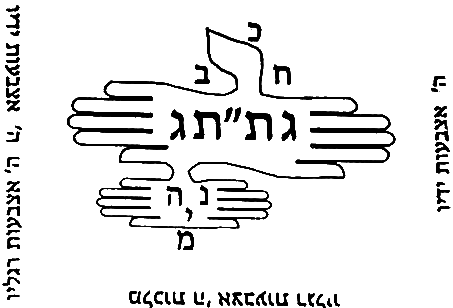
בענין צורת הספירות ר"ל סדר עמידתן רבו בו הדעות וציירו להם המקובלים צורות ביריעות גדולות וקראום אילן. יש שרצה לציירם בצורת א' כיצד חלקו הראש לג' חלקים הא' לכ"ע וצד ימין של ראש א' חכמה והשמאלי בינה. והקו אשר למטה מהיו"ד שהוא וא"ו של אלף קרא ראשו הימין חסד וראשו השמאלי גבורה ואמצעי ת"ת. וממראה מתניו ולמטה מה שכנגד הימין נצח ומה שכנגד השמאל הוד ומה שבין שניהם יסוד ועוקץ התחתון מלכות וזו צורתה.
6:1:5 Behold, they intended to depict the figure of the supernal Man in the figure of an alef, to hint that the whole of it is a perfect union: although we say "ten Sefirot"—which indicates separate things—the whole of it is a perfect union, and this he indicated by the likeness of an alef. And there is some support for this view in the words of Rashbi in Sefer ha-Tikkunim (Tikkun 55), and these are his words: "Come and see: this skull is [the letter] alef, like this; it has four sides, [and] in them YHVH is one and His name is one—there is none else besides Him," etc. Thus far [his words].
הנה כוונו לכתוב צורות האדם העליון בצורת אלף לרמוז כי כלו יחוד שלם. אע"פ שנאמר י"ס שהוא מורה דברים מחולקים כלו הוא יחוד שלם וזה הורה בדמות אלף. ויש קצת סמך לדעת זה בדברי הרשב"י בס' התיקונים (תקון נה) וז"ל תא חזי קרקפתא דא א כגוונא דא, ד' סטרין דיליה בהון ידו"ד הוא חד ושמיה חד אין עוד מלבדו כו' עכ"ל.
6:1:6 And although his words and his figure are not exactly as above,
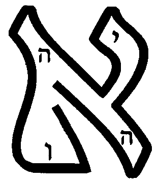
ואע"פ שאין דבריו וציורו ממש כנ"ל,
6:1:7 nonetheless, from it [it] appears that the intent of the Name—which is ten Sefirot, as is known—is hinted at in the figure of the alef, to hint at ten Sefirot unified [in] a perfect unity, an equal unity. And this is what it says, "in them YHVH is one and His name is one"—the meaning [being] to indicate that He and His name are unified, although His name indicates ten Sefirot. And behold, the existence of the alef indicates the union.
אעפ"כ מתוכו נראה כי כוונת השם שהוא י' ספירות כנודע, נרמז בצורת האלף לרמוז אל י"ס מיוחדים אחדות שלימה אחדות שוה. וז"ש בהון ה' הוא חד ושמיה חד פי' להורות שמתייחד הוא ושמו עם היות ששמו מורה י"ס. והנה מציאות הא' מורה על היחוד.
6:1:8 And the matter of the ten digits and the ten digits—its place is not here, and it will be explained in the Gate of the Soul, chapter 8. And others depicted the figure of the ten Sefirot in the figure of an alef, like this:
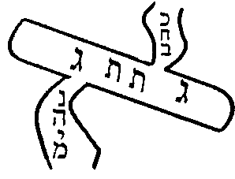
וענין י' אצבעות וי' אצבעות אין מקומו הנה ויתבאר בשער הנשמה פ"ח. ואחרים ציירו צורת י' ספי' בצורת אלף כזה.
6:1:9 And it is true that the first figure is the most acceptable, for it is close to the tradition [Kabbalah] in the hand of most of the Kabbalists, as we shall explain. And the intent of these Kabbalists is not to say that this is literally the secret of their standing—for in this figure there are no channels, nor right and left intrinsically (that is to say, Chesed and Din)—but rather their intent is to indicate the complete union: just as the alef means "one," so the ten Sefirot are a perfect unity. And he further intended by this to make the figure of a patach at its [upper] thorn, above Keter, to hint that Keter is not a first cause, God forbid, but [that] above it [is] the sole Lord who rules over all of them and emanates effluence upon them; and one patach below, at Malkhut, to hint that the intent of all this is for the governance of the lower ones, and that it [Malkhut] is a passage for the effluence emanated from the First Cause to His created entities, as we have explained in the preceding gates. Further, another figure Rabbi Moshe de León wrote in the Sefer ha-Shem that he composed, and he said that it depends on the view of Sefer ha-Bahir; and some Kabbalists followed this way, and in particular because they wished to rely on it [to support] the matter of "their end is embedded in their beginning"—for the end, which is Malkhut, is embedded in the beginning, which is Keter. And its figure is like this:
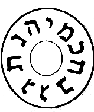
והן אמת כי הצורה הא' היא היותר מתקבלת כי היא קרובה אל הקבלה אשר ביד רוב המקובלים כאשר נבאר. ואין כוונת המקובלים האלה לומר שזה ממש סוד עמידתן כי במציאות הצורה הזו לא צנורות ולא ימין ושמאל בעצם (ר"ל חסד ודין). אלא כוונתם להורות על היחוד הגמור כמו שהאלף פי' אחד כן הי"ס הן אחדות שלימה. וכיון עוד בזה לעשות צורת הפתח בעוקצה למעלה מן הכתר לרמוז כי אין הכתר סבה ראשונה ח"ו אלא עליו אדון יחיד המושל בכלן ומשפיע עליהם שפע. ופתח אחד למטה במלכות לרמוז כי כוונת כל זה להנהגת התחתונים והוא מעבר אל השפע הנשפע מהסבה ראשונה אל ברואיו כאשר בארנו בשערים הקודמים. עוד צורה אחרת כתבה ר' משה דליאון בספר השם שחבר ואמר שהיא תלויה בדעת ספר הבהיר. וקצת מקובלים דרכו דרך זה ובפרט כי רצו להסמך בו על ענין נעוץ סופן בתחלתן כי הסוף שהיא המלכות נעוץ בתחילה שהוא הכתר וצורתה כזו.
6:1:10 And their view concerning this figure, in the matter of "their end is embedded in their beginning," is not settled at all, as the one who delves will see with his intellect; rather, the matter of "their end is embedded in their beginning" is a great secret explained in the Tikkunim in the words of Rashbi, and we shall explain it in the Gate "From Below to Above". Further, there are those who wrote a figure close to the agreement of the Kabbalists, and it is like this:
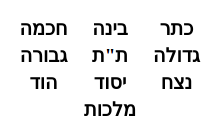
ואין דעתם בענין צורה הזו בענין נעוץ סופן בתחילתן מתישבת כלל כאשר יראה המעיין בשכלו אלא ענין נעוץ סופן בתחילתן הוא סוד גדול נתבאר בתיקונים בדברי הרשב"י ונבאר אותו בשער ממטה למעלה. עוד יש שכתבו צורה קרובה אל הסכמת מקובלים והיא כזו:
6:1:11 And Rabbi Moshe de León likewise copied it in the Sefer ha-Shem, and wrote: "And this view does not arise well according to the Kabbalah." But Rabbi Shem Tov ben Rabbi Shem Tov annotated upon it in the margin, [and] these are his words: "In my humble opinion, this view does not conflict with the other views, and it is very deep. And he counted ten Sefirot from the known Keter, whose name is like the name of its master—it is the supernal Keter, the sole Lord; and this is called in Sefer Yetzirah 'He sealed the height' (with yod) [with YHV], and it is called Keter like it, for it encompasses all the Sefirot. And this is the secret of Thought emanated from the supernal Keter—[namely] Chokhmah, that is to say, the more revealed [one]; and it, by the power of the Ein Sof, brings forth the actions, [so as] to act in the likeness of the female, [and] therefore it is on the left. And Binah is called thus [because] she is between the two; in the secret of the Da'at hidden in her [which] is the emanation of the known Keter, in the secret of [the] supernal Keter. And this is the secret of the three names that the Name revealed to Moses at the bush; and the second, in the second name, is entirely the likeness of the female. Concerning this [there is] a very deep secret." Thus far [his words].
והעתיקה ג"כ רבי משה דיליאון בספר השם וכתב ואין הדעת הזה עולה יפה ע"ד הקבלה אבל ה"ר שם טוב בן ר' שם טוב הגיה עליו בגליון ז"ל לענ"ד אין הדעת הזאת עם הדעות אחרות חולק והוא עמוק מאד ומנה ע"ס מכתר הידוע ששמו כשם רבו הוא הכ"ע אדון יחיד וזה נקרא בס' יצירה חתם רום (ביו"ד) [ביה"ו] ונקרא כתר כמוהו כי הוא המקיף אל כל הספירות וזהו סוד המחשבה הנאצלת מכ"ע החכמה כלומר היותר נגלית והיא בכח הא"ס מוציאה הפעולות לפעול דמיון הנקבה לכן היא בשמאל והבינה נקרא כן שהיא בין שניהם בסוד הדעת הגנוז בה הוא אצילות כתר הידוע בסוד כ"ע וזהו סוד ג' שמות שגילה השם למשה בסנה והשני' בשם שני הוא הכל דמיון הנקבה על זה סוד עמוק מאוד עכ"ל.
6:1:12 And behold, he intended to give a reason for Binah's being in the middle, [and] for Chokhmah's being on the left. And the beginning of his words may be understood somewhat by the reasoning of the view that is his, which we wrote in the Gate of Whether the Ein Sof is the Keter, chapter 3. But in truth, [to engage in] length concerning this reasoning—that Chokhmah is on the left, and Keter on the right, and Binah in the middle—is a vain exercise, for it is a strange and rejected reasoning; for they hold that Chokhmah is Din, and Binah tips the balance between Chokhmah and Keter. And this view is null, as we shall expound at length in the Gate of Essence and Governance, chapter 5. And the correct view, the received [one], agreed upon in the mouth of all the Kabbalists, is this; and Rabbi Moshe de León wrote it in the Sefer ha-Shem, [and] these are his words: "And there is another view, comely and very acceptable, surpassing them all, and it is true: that the three upper ones are like a segolta." And it is this:
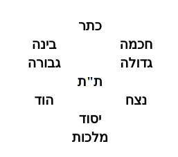
והנה כיון לתת טעם לבינה שהיא בנתים לחכמה שהיא בשמאל. ותחלת דבריו יובנו קצת בסברת הדעת אשר לו אשר כתבנו בשער אם הא"ס הוא הכתר פ"ג. ולפי האמת אריכות בענין הסברא הזאת שחכמה אל השמאל וכתר אל הימין ובינה היא באמצע הוא פועל בטל כי הוא סברא זרה ודחיה כי סבירא להו שחכמה היא דין ובינה מכרעת בין החכמה והכתר. והדעת זה בטל כמו שנאריך בשער מהות והנהגה בפרק ה'. והדעת הנכונה והמקובלת המוסכמת בפי כל המקובלים היא זו וכתבה ר' משה דיליאון בספר השם וז"ל ויש דעת אחרת נאה ומקובלת מאוד עולה על כולנה והיא אמת שג' עליונות כעין סגולתא והוא זאת.
6:1:13 And [these are] the gracious words of a wise man, for it is fine sifted flour. And this way was adopted by Rabbi Yehudah Chayyat in his book, and he gave a sign for the matter: "segolta, segol, segol"—for the three first ones [are] a segolta, the three second ones a segol, and the three third ones a segol, and Malkhut receives from all of them, below all of them. However, concerning Malkhut he wrote things that are forbidden to hear—and may his Master forgive him. And this figure is likewise agreed upon and necessitated from the words of Rashbi in many places. And in the interpretation of the points [vowels] he holds that the three first ones are a segolta, the segolta's hint being among them; and likewise he holds that the segol [signifies] the three patriarchs, and at times he holds that they are Netzach-Hod-Yesod [NHY]—[which] indicates that this view is agreed upon and necessitated. He further explained, in another place—and it is a great proof for this view—[and] these are his words, in Sefer Ra'aya Mehemna (Beha'alotekha, folio 153): "And Chokhmah, Chesed, [and] Netzach shall be on the right, for on their account David said, 'The right hand of YHVH does valiantly, the right hand of YHVH is exalted, the right hand of YHVH does valiantly.' And three on the left shall be bound together, which are Binah, Gevurah, [and] Hod. And three grades of the middle—Keter, Tiferet, [and] Yesod—which bind [the] right and [the] left." Thus far [his words].
ודפח"ח כי היא סלת נקיה. והדרך הזה תפס ר' יהודא חייטי בספרו ונתן סימן לדבר סגולתא סגול. סגול. כי ג' ראשונות סגולתא, וג' שניות סגול, וג' שלישית סגול, ומלכות מקבלת מכלן למטה מכלן. אמנם כתב בענין המלכות דברים שאסור לשומען ושרי ליה מאריה. וכן מוסכם ומוכרח הצורה הזאת מתוך דברי הרשב"י במקומות רבים. ובפירוש הנקודות סבירא ליה כי ג' ראשונות הם סגולתא וסגולתא הרמז שלה בהם וכן סבירא ליה שסגול הם ג' אבות ולעתים ס"ל שהם נה"י מורה היות הדעת הזה מוסכם ומוכרח. עוד פי' במ"א והוא הכרח גדול להדעת הזה וז"ל בס' רעיא מהימנא (בהעלותך דף קנ"ג) ויהון חכמה חסד נצח לימין דבגינייהו אמר דוד ימין ה' עשה חיל ימין ה' רוממה ימין ה' עושה חיל. ותלת משמאלא יתקשרון כחדא דאינון בינה גבורה הוד. ותלת דרגין דאמצעיתא כתר ת"ת יסוד, דאחדין בימינא ושמאלא עכ"ל.
6:1:14 Behold, he explained explicitly that Chokhmah, Chesed, [and] Netzach are on the right, and Binah, Gevurah, [and Hod] are on the left, and Keter, Tiferet, [and] Yesod [are] in the middle. And according to their order known to us, it is necessitated that they be in the manner that we depicted above. And the being of Malkhut beneath Yesod is necessitated, for she receives from him, and he is the "best man" between her and her husband, and it is necessitated that she be beneath him.
הנה ביאר בפי' כי חכמה חסד נצח הם אל הימין, ובינה גבורה הוא אל השמאל, וכתר ת"ת יסוד באמצע. ולפי סדורם הידוע אצלינו הוכרח היותם על הדרך שציירנו למעלה. והיות המלכות תחת היסוד הוא מוכרח, כי היא מקבלת ממנו, והוא השושבין בינה ובין בעלה, והוכרח היותה תחתיו.
6:1:15 And further, [it is necessitated] because she is the gate of entry, as is necessitated from the words of Rashbi, peace be upon him, [in] places too many to number. This matter was further explained in the Tikkunim (in Tikkunei Zohar Chadash, folio 112), [and] these are its words: "And the nine Sefirot are arranged in threes upon the central pillar, like this: Chokhmah-Chesed-Netzach, Keter-Tiferet-Yesod, Binah-Gevurah-Hod; Malkhut is the tenth to them and the fourth to them." Thus far [its words].
ועוד כי היא פתח הכניסה כאשר הוכרח מתוך דברי הרשב"י ע"ה מקומות רבו מספר. עוד נתבאר הענין הזה בתקונים (בתז"ח דף קי"ב) וז"ל ותשע ספירות אינון משולשין בעמודא דאמציעותא כגוונא דא. חכמה חסד נצח, כתר תפארת יסוד, בינה גבורה הוד, מלכות עשירית לון ורביעית לון עכ"ל.
6:1:16 And the intent is clear: that the Sefirot are arranged three [by] three. And once we have known this matter, of necessity their order is: Keter, Tiferet, Yesod in the middle—because Tiferet and Yesod are intermediaries and arbiters between Din and mercy, as we shall explain in the Gate of Arbiters. And therefore their depiction in this figure that we depicted above was required. It was further explained in the Tikkunim (Tikkun 69, folio 101b), [and] these are its words: "Keter over Chokhmah and Binah is a segolta—a cholam over a tzeirei. A segol is a dot beneath the tzeirei. Chesed, Gevurah, Tiferet below. Netzach, Hod, Yesod in the middle is a shuruk; and so, when Tiferet is in the middle, it is a shalshelet." Thus far [its words], for our matter.
והכוונה מבוארת כי הספירות מסודרות ג' ג'. ואחר שידענו הענין הזה. בהכרח סדרם הוא כתר ת"ת יסוד באמצע. מפני כי הת"ת והיסוד הם ממוצעים ומכריעים בין הדין והרחמים, כמו שנבאר בשער המכריעין. ולכן הוצרך ציורם בצורה הזאת שציירנו לעיל. עוד נתבאר בתיקונים (תקונא ס"ט דף ק"א ע"ב) וז"ל כתר על חכמה ובינה איהו סגולתא חולם על צר"י. סגול איהו נקודה תחות צר"י. חסד גבורה תפארת לתתא. נצח הוד יסוד באמצעיתא איהו שרק והכי כד תפארת באמצעיתא איהו שלשלת. עכ"ל לעניינו.
6:1:17 And behold, he said that Keter [is] over Chokhmah and Binah in the figure of a segolta. And he said that Tiferet [is] below Gedulah and Gevurah, and this is a segol. [It is] true that at times it [Tiferet] will be exactly between Gedulah and Gevurah, and then it will be in the figure of a shalshelet—and this is what it says, "when Tiferet is in the middle, it is a shalshelet." And likewise Yesod [is] between Netzach and Hod, and they are a shuruk, which are three dots in one row—although they are not diagonal, as is its norm. Thus far. Thus, from these passages, the figure that most of the commentators depicted for the Sefirot is necessitated; and it is a correct reasoning, and there is no doubt in it.
והנה אמר כי כתר על חכמה ובינה בצורת סגולתא. ואמר כי תפארת למטה מגדולה וגבורה והיינו סגול. אמת כי לעתים תהיה ממש בין גדולה וגבורה ואז תהיה בצורת שלשלת. וז"ש כד תפארת באמצעיתא איהו שלשלת. וכן יסוד בין הנצח וההוד והם שרק, שהם ג' נקודות בשורה אחת, עם היות שאינם באלכסון כמשפטו, ע"כ. הרי מתוך המאמרים האלה הוכרח הצורה שציירו רוב המפרשים בספירות והיא סברא נכונה ואין בה ספק:
6:2:1 After we have stood, in the preceding chapter, to set up the matter of the Emanation in the figure upon which all the Kabbalists, or most of them, have agreed, and we have necessitated it by means of some passages from the words of Rashbi, peace be upon him, in the Tikkunim—we have seen [fit] to copy here the reasoning of the author of Me'irat Einayim, [showing] that from these passages there is a refutation of his words, [for] he is opposed to all the Kabbalists. And these are his words, in [the] portion [of] Terumah. First he wrote, in the name of Rabbi Shem Tov, one figure, and it accords with the agreed-upon figure and does not conflict with the figure that we necessitated in the preceding chapter, except in the three first ones; and this is its figure:
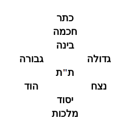
אחר שבפרק הקודם עמדנו להציב ענין האצילות בצורה שהסכימו בה כל המקובלים או רובם והכרחנו אותו במקצת מאמרים מדברי הרשב"י ע"ה בתקונים. ראינו להעתיק הנה סברת בעל מאירת עינים שיש מתוך המאמרים האלה הריסה אל דבריו והוא מנגד אל כל המקובלים וז"ל בפרשת תרומה. ראשונה כתב בשם ר' שם טוב צורה אחת והיא עם הצורה המוסכמת צודקת ואינה חולקת על הצורה שהכרחנו בפרק הקודם אלא בשלש ראשונות וזו צורתה.
6:2:2 And although the order of these three first ones is the reasoning of the author of Me'irat Einayim and the view of Rabbi Todros ha-Levi in Sefer ha-Ma'arekhet—and Rabbi Moshe de León likewise wrote something of this reasoning—
ועם היות סדר ג' ראשונות אלו הוא סברת בעל מאירת עינים ודעת רבי טודרוס הלוי בספר המערכ' וכן כתב קצת מזאת הסברא רבי משה דיליאון.
6:2:3 Behold, from the passages that we necessitated in the preceding figure, in the preceding chapter, there is found an explicit refutation of their words, and there is no need to be lengthy. He further wrote in Sefer Me'irat Einayim, in the aforementioned portion, [and] these are his words: "Behold, I depict for you the figure of the ten Sefirot in their correct, true positioning, for [the one] to whom the Name, may He be blessed, has given eyes to see and a heart to understand; and I have not seen one in a thousand among all the Kabbalists who perceived this matter, apart from my teacher, from whom I received [it]." And this is it:
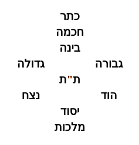
הנה מתוך המאמרים שהכרחנו בצורה הקודמת בפרק הקודם נמצא הריסה אל דבריהם בפירוש ואין צריך להאריך. עוד כתב בספר מאירת עינים בפרשה הנז' וז"ל הנני מצייר לך צורת עשר ספי' בהעמדתן הנכונה האמיתית לאשר נתן השם ית' עינים לראות ולב להבין ולא ראיתי אחד מן אלף בכל המקובלים שהרגיש בענין זה מבלעדי מורי שקבלתי ממנו וזו היא.
6:2:4 And whoever says of this form that it is reversed—he is of a perverse generation; and if the speaker's intent is good, his mind is reversed. He seeks to see the hinder parts, whereas we [see] the face, for it is said, "I have set YHVH always before me," etc. And although the Sefirot are nothing but holy spirit—spiritual thoughts, unified one to another [in] a true union, and all unified in the Ein Sof, in [literally] the Ein Sof—and above there is neither right nor left, but rather these incline rightward, to acquittal, and therefore [the right] is called right and mercy, and these incline leftward, to liability, and therefore [the left] is called left and Din—nonetheless, behold, David, peace be upon him, said, "I have set YHVH always before me," etc. (Psalms 16:8). And over and above all this, our Sages of blessed memory said (Yoma, folio 53): when a person takes three steps [back], he gives "peace" to his left first, because the Shekhinah is opposite him; and thus he bows to the right of the Shekhinah, and afterward gives "peace" to his right, which is the left of the Shekhinah. Thus far [his words].
וכל האומר על התבני' הזאת שהיא מהופכת, דור תהפוכות הוא. ואם כונת האומר טובה, שכלו מהופך הוא. מבקש לראות אחוריים, ואנחנו הפנים שנאמר שויתי ה' לנגדי תמיד וגו'. ואעפ"י שאין הספירות אלא רוח הקדש מחשבות רוחניות מיוחדות זו לזו יחוד אמתי. והכל מיוחד באין סוף, לא"ס. ואין למעלה לא ימין ולא שמאל. אלא שאלו מיימינים לזכות, ולפיכך נקרא ימין ורחמים. ואלו משמאילים לחובה, ולכך נקרא שמאל ודין. מ"מ הרי דהמע"ה אמר שויתי ה' לנגדי תמיד וגו' (תהלים טז ח). ועל כל זאת אחז"ל (יומא דף נ"ג) כשאדם פוסע שלש פסיעות יתן שלום לשמאלו תחלה מפני ששכינה כנגדו והכי הוא משתחוה לימינו של שכינה ואח"כ נותן שלום לימינו שהוא שמאלו של שכינה עכ"ל.
6:2:5 And we have several responses to him. First, regarding what he said—that he [the opponent] seeks to see the hinder parts, whereas we [see] the face: even according to him there is no substance in this reasoning, for so it is fitting not to gaze upon the face, as it is written (Exodus 33:23), "and you shall see My back, but My face shall not be seen." And even [as for] the hinder parts—how many "hinder parts of hinder parts" are [the ones] that are seen!—all the more so [is it not fitting] to gaze upon the awesome face (see in Tikkun 69, folio 111, in what was said concerning "you shall not be able to see My face"). And this is the opposite of the correct view.
ויש לנו עליו כמה תשובות. ראשונה במה שאמר הוא מבקש לראות האחוריים ואנחנו הפנים. אפילו לדידיה אין בטעם זה ממש כי כן ראוי שלא להביט בפנים כדכתיב (שמות לג כג) וראית את אחורי ופני לא יראו. ואפילו האחוריים כמה אחוריים לאחוריים הנראים כ"ש להביט בפנים הנוראים (ע' בתקונא סט דקי"א במ"ש על לא תוכל לראות את פני). וזהו הפך הדעת הנכון.
6:2:6 And further, [the truth is] that the matter is the opposite of his view, for the face is in this order: right opposite right, and left opposite left. And [there is] a proof from the matter of the tefillin: for the first portion, Kadesh—which is Chokhmah—is at the right of the reader and the left of the one laying [the tefillin]; and the portion Ve-haya im shamoa—which is Gevurah—is at the right of the one laying [them] and the left of the reader. But according to his view it should be the opposite, for the one laying [them] lays [them] right opposite right and left opposite left, and the reader, who is opposite him, would have the left toward the right and the right toward the left. And there is no [valid] response from [the fact that] Ve-haya ki yevi'akha—which is Binah—and Shema—which is Gedulah—are in [direct] correspondence: Shema, Gedulah, at the right of the one laying [them], and Ve-haya ki yevi'akha at his left. This is no response at all; for, on the contrary, Chokhmah and Gevurah are the principal [proof] for this matter, for several reasons: for it is fitting to arrange Chokhmah to the right, since it is the rightmost, the head of all the Sefirot, and Gevurah [is] the principal leftmost, [tending] to liability. And why should we reverse these, which are principal, on account of two [others] that are [only] the root of the right and the left?
ועוד כי הענין הוא הפך דעתו [ז] כי הפנים הם בסדר הזה ימין כנגד ימין ושמאל כנגד שמאל. וראיה מענין דתפילין כי פרשה ראשונה קדש והיא חכמה לימין הקורא ולשמאל המניח, ופרשת והיה אם שמוע שהיא גבורה לימין המניח ולשמאל הקורא. ולפי דעתו היה ראוי להיות בהפך כי המניח מניח ימין כנגד ימין ושמאל כנגד שמאל והקורא שהוא כנגדו יהיה שמאל לימין וימין לשמאל. ואין תשובה מן והיה כי יביאך שהוא הבינה ושמע שהוא הגדולה הם ביושר שמע גדולה לימין המניח והיה כי יביאך לשמאל המניח. זו אינה תשובה כלל, שאדרבה החכמה והגבורה הם עיקר אל הענין הזה מפני כמה דברים. כי מן הראוי לסדר חכמה אל הימין מפני שהוא ימינית ראש לכל הספירות, וגבורה עיקר השמאלית לחובה. ולמה לנו להפך אלו שהם עיקר מפני שנים שאינם [אלא] שורש הימין והשמאל.
6:2:7 And further, [the proof holds] because Shema, too, [is] at the right of the reader in the aspect of Ve-haya im shamoa; and likewise Ve-haya ki yevi'akha [is] at the left of the reader in the aspect of Kadesh. And this is a compelling proof—what it is impossible to say of Kadesh and Ve-haya im shamoa—that, with respect to the aspect of all of them, Kadesh is always at the left of the one laying [them] and the right of the reader, and Ve-haya im shamoa at the right of the one laying [them] and the left of the reader. And this is certainly a refutation of the words of the author of Sefer Me'irat Einayim.
ועוד כי שמע נמי אל הימין הקורא בבחי' והיה אם שמוע וכן והיה כי יביאך אל שמאל הקורא בבחינת קדש. וזו ראיה מוכרחת מה שא"א לומר בקדש והיה אם שמוע, שבבחינת כלם לעולם קדש לשמאל המניח וימין הקורא, והיה אם שמוע לימין המניח ושמאל הקורא. וזה ודאי הריסה אל דברי בעל ספר מאירת עינים.
6:2:8 And [there is] a further proof from the ascent of the altar, for there [is] the foundation of the union, as Rashbi, peace be upon him, explained in the Zohar (Bamidbar, folio 120); and we have copied [its] language in the Gate of Self and Vessels, chapter 1, and in the Gate of Essence and Governance, chapter 21.
ועוד ראייה מעליית המזבח כי שם יסוד היחוד, כמו שפי' הרשב"י ע"ה בזוהר (במדבר דף ק"ך), והעתקנו ל' בשער עצמות וכלים בפ"א, ובשער מהות והנהגה פכ"א.
6:2:9 And behold, the ascent of it [the altar] was by the ramp, and the ramp was on the south of the altar; and when [the priest] was ascending, he would turn to the southeast corner, which is the right of the one ascending. And were it true as the words of Sefer Me'irat Einayim, it would be fitting that he turn to his left, for there [would be] the right opposite him; and it would be fitting that the ramp be on the north of the altar, so that in his ascent by the ramp he would turn to the left of the one ascending—that is, the right that is opposite [him]—and turn to the northeast corner, in this order, etc. Rather, what have you to say? That [as for] this figure, there is no doubt that it is reversed, and the true figure is the figure agreed upon in the words of Rashbi, peace be upon him, [namely] that the right [corresponds] to the right and the left to the left. And therefore they expounded, "every turn that you turn shall be only to the right"—and this is the actual right of a person, [such] that "a left opposite him" and "a right opposite him" have no place there. And likewise they expounded concerning Abraham our father, peace be upon him, that all his turnings were to [the side of] Chesed. A further response to what he wished to derive support [for] from the verse "I have set YHVH always before me": it is no proof, for David, peace be upon him, would say so on account of the fear of the Name [being] before his face all the day, and he would think as if the Shekhinah were opposite him perpetually, and he [were] like a servant before the King, so as not to waver from his service, neither little nor much. And [as for] what he wished to derive support [for] from the matter of the three steps—shall we, then, set aside all the rest of the matters of the [Temple] service and bring a proof from a single detail, [namely] the matter of the steps?
והנה עלייתו היה בכבש והכבש היה בדרומו של מזבח ובהיותו עולה היה פונה לקרן דרומית מזרחית שהוא ימינו של העולה, ואם אמת כדברי ספר מאירת עינים היה ראוי שיפנה על שמאלו כי שם ימין כנגדו, והיה ראוי שיהיה הכבש בצפון המזבח כדי שבעלייתו בכבש יפנה אל שמאל העולה דהיינו ימין שכנגדו ויפנה לקרן צפונית מזרחית כסדר הזה וכו'. אלא מאי אית לך למימר כי הצורה הזאת אין בו ספק שהיא מהופכת והצורה האמיתית היא הצורה המוסכמת בדברי הרשב"י ע"ה שהוא ימין אל הימין ושמאל אל השמאל [ח]. ולכן דרשו כל פנות שאתה פונה לא יהא אלא לימין וזה ימינו של אדם ממש דלא שייך תמן שמאל שכנגדו ולא ימין שכנגדו. וכן דרשו באאע"ה שכל פנותיו היה אל החסד. עוד תשובה אל מה שרצה להסתייע מפסוק שויתי ה' לנגדי תמיד אינו ראייה כי דהמע"ה היה אומר כך משום יראת השם נגד פניו כל היום והיה חושב כאלו שכינה כנגדו לעולם והוא כעבד לפני המלך לבלתי יתמוטט מעבודתו לא מעט ולא הרבה. ומה שרצה להסתייע מענין ג' פסיעות וכי נניח כל שאר ענייני המעשה ונביא ראיה מפרטי אחד והוא ענין הפסיעות.
6:2:10 Furthermore, there is no proof at all; for [though] you raise an objection against me from the view of Rava, who said "his right" [means] the right of the Holy One, blessed be He, [and] "his left" the left of the Holy One, blessed be He—I [can] support myself from the view of Abaye, who reckoned "his right" [as] his own right and "his left" his own left literally, [so as] to reckon that the matter of the steps is like the intent of the other commandments and deeds. Until Rava taught him that the meaning of "his right" is, that is to say, the right of the Holy One, blessed be He, [and] "his left" the left of the Holy One, blessed be He—the opposite of the other things. And the reason is that now, when one comes to take leave, he comes to teach a person not to think that his words are for naught and in vain, God forbid, but rather that he should be assured that his words were heard—like a person who speaks with the King in the inner chamber and takes leave of the King in peace and love. Or it is possible [that it is] to show a person his faith: that even though he unified the supernal worlds by the "hinder parts" that are seen, nonetheless the Holy One, blessed be He, hearkened to him by the "awesome face." Therefore, when he comes to take leave, he gives peace to the right of the Holy One, blessed be He, which is his [own] left. And in this manner we can explain the verse "I have set YHVH always before me," etc. Or it is possible that we should say that the matter of the peace[-giving] in this is for the [angel] who receives the prayer and makes it into crowns for his Master—even though he said "the right of the Holy One" and "his left." So too they said (in tractate Berakhot, fol. 7): Rabbi Ishmael said, "I saw Aktariel Yah YHVH Tzeva'ot," etc.—and he is the one who receives the prayers, and he is not the King of Glory; for if so, he would not have said "I saw" literally, God forbid. And as is known, Aktariel is a prince on high and not a god. And nevertheless there is no difficulty [in] his saying "Yah YHVH Tzeva'ot," for the angels are called by the name of their Master, by the Glory that hovers over them. And so it says concerning Abraham (Genesis 18:3), "And he said, my Lord [Adonai], do not pass on," and the Sages, of blessed memory, explained that he said [it] to the greatest of them—and the intent is the Glory that hovers over and clothes itself in them, which is the Shekhinah. And so [it is] in the matter of Aktariel, for concerning the Glory that clothes itself in him it says "Yah YHVH Tzeva'ot." And so [it is] in the matter of "He who makes peace," that he gives peace to the right opposite him and to the left opposite him because the Glory hovers over him and clothes itself in him; and there a literal left and a literal right apply. And this secret depends on the knowledge of the matter of the angels; it will be explained in the Gate of the Palaces.
ועוד כי אין ראייה כלל דאדמותבת לי מסברת רבא דאמר ימינו ימינו של הקב"ה שמאלו שמאלו של הקב"ה, תסייעי לי מסברת אביי דהוה חשיב ימינו ימין דידיה ושמאל שמאל דידיה ממש לחושבו כי ענין הפסיעות ככוונת שאר המצות והמעשים. עד שרבא הורה לו כי פי' ימינו ר"ל ימינו של הקב"ה שמאלו שמאל של הקב"ה הפך שאר הדברים. והטעם כי עתה שבא להפטר בא להורות לאדם שלא יחשוב היות דבריו לריק ולבטלה ח"ו אלא שיהיה מובטח שנשמעו דבריו כאדם המדבר עם המלך החדרה ונפטר מהמלך בשלום ואהבה. או אפשר להראות האדם אמונתו שאעפ"י שייחד העולמות העליונים באחורים הנראים עכ"ז הקב"ה הקשיב לו בפנים הנוראים. לפיכך כשבא ליפטר נותן שלום לימינו של הקב"ה שהוא שמאלו. ועד"ז נוכל לפרש פסוק שויתי ה' לנגדי תמיד וגו'. או אפשר שנאמר כי ענין השלום בזה הוא למקבל התפלה ועושה אותה כתרים לרבו עם היות שאמר ימינו של הקב"ה ושמאלו של הקב"ה. כך ג"כ אמרו (במס' ברכות ד"ז) א"ר ישמעאל ראיתי את אכתריא"ל י"ה ידו"ד צבאות וכו' והוא הוא המקבל התפלות ואינו מלך הכבוד, שא"כ לא היה אומר ראיתי ממש ח"ו. וכמו שהוא ידוע כי אכתריא"ל הוא שר במרום ולא אלוה. ועם כל זאת אין דוחק אמרו י"ה ידוד צבאות, כי המלאכים נקראים בשם רבם בשם הכבוד החופף עליהם. וכן הוא אומר באברהם (בראשית יח ג) ויאמר אדני אל תעבור, ופירשו חז"ל לגדול שבהם אמר, והכוונה הכבוד החופף ומתלבש בהם שהיא השכינה. וכן בענין אכת"ריא"ל כי על הכבוד המתלבש בו נאמר י"ה ידו"ד צבאות. וכן בענין עושה שלום שנותן שלום לימין שכנגדו ולשמאל שכנגדו מפני שהכבוד חופף עליו ומתלבש בו. ושם שייך שמאל ממש וימין ממש. וסוד זה תלוי בידיעה ענין המלאכים יתבאר בשער ההיכלות [ט].
6:2:11 Furthermore, another response, namely: in that it is well known that man—his forms, his structure, his limbs, his arteries, and his sinews—is the likeness of a supernal reflection. And man is a supernal shadow that became corporealized and thickened in this world, and he is the likeness of a supernal reflection appearing in this world. If so, it is fitting that his right [correspond] to the right of the supernal things and his left to the left of the supernal things—like the matter of the shadow, whose right is opposite the right of its root. And this matter is a root and a fundamental principle in faith and in piety.
ועוד תשובה אחרת והוא במה שמפורסם היות האדם צורותיו ותכונתו ואבריו ועורקיו וגידיו דמות בבואה עליונה. והאדם הוא צל עליון שנתגשם ונתעבה בעה"ז והוא דמות בבואה עליונה הנראה בעולם הזה. א"כ מן הראוי שיהיה ימינו לימין הדברים העליונים ושמאלו לשמאל דברים העליונים כענין הצל שהוא ימינא נגד הימין שרשו. והענין הוא שרש ועיקר באמונה והחסידות.
6:2:12 Furthermore, that in truth there is above neither right nor left, but all is right and all is left. And a great proof [is] from the matter of the Tablets, which were one of the supernal branches whose spirituality became corporealized and thickened for the honor of Israel; and the Sages, of blessed memory, testified concerning them (Shekalim, fol. 16) that the Ten Commandments were visible in them from every side and from every direction and from every corner. And if in [something] corporealized [it is] so—that there is in it neither right nor left, but all is right and all is left—how much more so, and a fortiori, in the subtlety of the spiritual that is elevated above every cause, may it be praised and exalted. And if we decree right and left, it is in the aspect of merit and liability, as in the matter of what they said, "these incline to the left, to liability, and these incline to the right, to merit." And it is known that the matter of merit and liability is in our terms, not in the terms of the spiritual [realm]—rather in the terms of its actions toward its created entities. If so, His right is our right and His left is our left, and there is no distinction between this and that.
ועוד כי לפי האמת אין למעלה לא ימין ולא שמאל והכל ימין והכל שמאל. וראייה גדולה מענין הלוחות שהיו אחד מהענפים העליונים שנתגשם הרוחניות ונתעבה לכבודן של ישראל, והעידו עליהם רז"ל (שקלים דף ט"ז) כי עשרת הדברות נראות בהם מכל צד ומכל עבר ומכל פנה. ואם במתגשם כך שאין בו לא ימין ולא שמאל אלא הכל ימין והכל שמאל, כל שכן וק"ו בדקות הרוחני המתעלה על כל עילה ישתבח ויתעלה. ואם אנו גוזרים ימין ושמאל הוא בבחינת הזכות והחובה כענין שאמרו אלו משמאילים לחובה ואלו מיימינים לזכות. וידוע כי ענין הזכות והחובה הוא בערכנו לא בערך הרוחניות אלא בערך פעולותיו אל נבראיו, אם כן ימינו הוא ימיננו ושמאלו הוא שמאלנו ואין חלוק בין זה לזה.
6:2:13 And the matter of the steps is according to one of the ways we explained. And we find ourselves learning that the principal, correct figure in this is according to what we drew in the previous chapter and established from the views of Rashbi, peace be upon him: three to the right, three to the left, three in the middle, and Malkhut receiving from them all. This is what emerges from the words of most of the Kabbalists. And there is yet [another] vision, and we shall explain it in the coming chapters, with the help of the Rock and His salvation.
וענין הפסיעות הוא על אחד מן הדרכים שפירשנו. ונמצאנו למדים שעיקר הצורה הנכונה בזה היא כפי מה שציירנו בפרק הקודם והכרחנו בדעות הרשב"י ע"ה ג' אל הימין ג' אל השמאל ג' באמצע והמלכות מקבלת מכלם. זהו העולה מתוך דברי רוב המקובלים. ויש עוד חזון ונבאר אותו בפרקים הבאים בעזרת הצור וישועתו:
6:3:1 After we have occupied ourselves in the previous chapters with the investigation of the figure of the standing of the pure and holy Emanation, and the figure agreed upon in the mouth of all the Kabbalists has emerged by our consensus—it is our wish to disclose to the ear of the discerning, concerning this figure, what its essence and its matter are and what the intent of its depiction is. And before everything, it is necessary to preface: although we say "right" and "left," there is there neither right nor left in their place, [and] neither back nor face. Rather, the matter of the Sefirot is as we shall explain.
אחרי שנתעסקנו בפרקים הקודמים בחקירת צורת עמידת האצילות הטהור והקדוש, ועלה בהסכמתנו הצורה המוסכמת בפי כל המקובלים. רצוננו לגלות אזן המשכילים בענין הצורה הזו מה מהותה וענינה ומה הכוונה בציורה. וקודם כל דבר צריך להקדים עם היות שאנו אומרים ימין ושמאל אין שם לא ימין ולא שמאל במקומם לא אחור ולא פנים. אמנם ענין הספי' הם כמו שנבאר.
6:3:2 And behold, it is known that every cause encompasses what it causes, and every cause encompasses its effect, and the effect is encompassed by its cause—just as the point of the earth is in the middle of the firmament, and the firmament surrounds the earth, and the firmament is the cause of all the things that are beneath the heavens, by the will of the Maker; as is well known among the investigators, that the motion of the spheres is the cause of the compounding of the elements. And Rambam, of blessed memory, explained [this] in the fourth [chapter] of Hilkhot Yesodei ha-Torah, and said that the motion of the spheres necessitates the compounding of the elements in the lower world. And likewise the diurnal sphere encompasses all the spheres and is their cause, to the point that it turns them [in] the opposite of their [own] motion—which is from west to east—and it turns them from east to west, by the will of their Maker. And above all, encompassing all, is the sphere of the Intellect. And so [it is] with the ascent of the grades, for each and every one encompasses all the grades that are below it. And this appears [to be] of necessity, and in particular when one examines the chapters of the Account of Creation, he will rejoice and be glad, and the love of this premise of ours will be the more steeped in his heart. And there is a proof for this from the dictum of Resh Lakish (in Chagigah, fol. 12), and these are [the] words: Rabbi Yehudah said, there are two firmaments, for it is said, "Behold, to YHVH your God belong the heavens and the heaven of heavens." Resh Lakish said [there are] seven, and these are they: Vilon, Raki'a, Shechakim, Zevul, Ma'on, Makhon, Aravot. Vilon serves no purpose except [that] it enters at morning and goes out at evening and renews each day the work of creation, for it is said, "who stretches out the heavens like a curtain [dok]." Raki'a—[the firmament] in which are the sun and moon, stars and constellations, fixed [in it], for it is said, "And God set them in the firmament of the heavens." Shechakim—[the firmament] in which millstones stand and grind manna for the righteous, for it is said, "And He commanded the skies [shechakim] above," etc., "and He rained down upon them manna to eat." Zevul—in which are [the heavenly] Jerusalem and the Temple, and an altar is built, and Michael the great prince stands and offers an offering upon it, for it is said, "I have surely built You a house of habitation [zevul], a place for You to dwell in forever." And whence [do we know] that it is called heaven? For it is written, "Look down from heaven and see, from Your holy and glorious habitation [zevul]." Ma'on—in which are companies of ministering angels who recite song by night and are silent by day, for the sake of the honor of Israel, for it is said, "By day YHVH commands His lovingkindness," etc., and what is the reason, etc.—thus far [the passage], to our purpose.
והנה ידוע כי כל סבה מקיף את מסובבו וכל עילה מקיף את עלולו והעלול מוקף מעילתו, כאשר נקודת הארץ באמצע הרקיע והרקיע סובב את הארץ והרקיע סבת כל הדברים אשר תחת השמים ברצון הקונה, כאשר הוא מפורסם בין החוקרים כי תנועת הגלגלים סבת הרכבת היסודות, וביארו הרמב"ם ז"ל בפ"ד מהלכות יסודי התורה ואמר כי תנועת הגלגלים יחייב הרכבת היסודות בעולם השפל. וכן הגלגל היומי מקיף כל הגלגלים והוא סבתם עד שהוא מחזירם הפך תנועתם שהוא ממערב למזרח והוא מחזירם ממזרח למערב ברצון קוניהם. ועל הכל מקיף את הכל גלגל השכל. וכן מידי עלות המדרגות, כי כל אחד ואחד מקיף את כל המדרגות אשר למטה ממנו. וזה נראה בהכרח ובפרט כשיעיין בפרקי מעשה בראשית ישמח ויגל ויושקע אהבת הקדמתנו זאת יותר בלבבו. ויש לזה ראייה ממאמר דריש לקיש (בחגיגה די"ב) וז"ל אר"י שני רקיעים הן שנאמר הן לה' אלקיך השמים ושמי השמים ריש לקיש אמר שבעה ואלו הן וילון רקיע שחקים זבול מעון מכון ערבות. וילון אינו משמש כלום אלא נכנס שחרית ויוצא ערבית ומחדש בכל יום מעשה בראשית שנאמר הנוטה כדוק שמים. רקיע שבו חמה ולבנה ככבים ומזלות קבועים בו שנאמר ויתן אותם אלקים ברקיע השמים. שחקים שבו רחיים עומדות וטוחנות מן לצדיקים שנאמר ויצו שחקים ממעל וגומר וימטר עליהם מן לאכול. זבול שבו ירושלם ובית המקדש ומזבח בנוי ומיכאל השר הגדול עומד ומקריב עליו קרבן שנאמר בנה בניתי בית זבול לך מכון לשבתך עולמים. ומנא לן דאקרי שמים דכתיב הבט משמים וראה מזבול קדשך ותפארתך. מעון שבו כתות של מלאכי השר' שאומרים שירה בלילה וחשות ביום מפני כבודן של ישראל שנאמר יומם יצוה ה' חסדו ומה טעם וכו'. עכ"ל לעניננו.
6:3:3 And behold, to say that these seven firmaments are the seven firmaments [i.e., spheres] that the astronomers counted is impossible—for he said that in one of these seven are the sun and moon, stars and constellations; and if these seven firmaments were the seven [spheres] that the astronomers counted, it would have been fitting that he count eight: seven for the seven planets, and one for the constellations. And such is not his intent, for he said that the sun and moon, stars and constellations are in one of the seven firmaments, whose name is Raki'a. And to explain that the Sages, of blessed memory, dispute with the astronomers—holding that the sun and moon, stars and constellations are fixed in a single sphere alone—[that too] is impossible. And therefore the sages of Israel do not dispute with the sages of the [other] nations except [on the question of] whether the sphere is fixed and the constellation revolves, or the constellation is fixed and the sphere revolves; but as to the number of the spheres they do not dispute.
והנה לומר שהז' רקיעים אלו הם ז' רקיעים שמנו חכמי התכונה א"א שהרי אמר שבאחד משבעה אלו הם חמה ולבנה ככבים ומזלות ואם היו הז' רקיעים אלו שבע רקיעים שמנו חכמי התכונה היה ראוי שימנה שמנה. ז' אל ז' ככבי לכת, וא' למזלות. ולא כן כוונתו שאמר שחמה ולבנה ככבים ומזלות הם באחד מז' רקיעים ששמו רקיע. ולפרש כי רז"ל חולקים עם חכמי התכונה [ס"ל דחמה ולבנה כוכבים ומזלות קבועים בגלגל אחד לבד א"א. וע"כ לא פליגי חכמי ישראל עם חכמי האומות אלא אם גלגל קבוע ומזל חוזר או מזל קבוע וגלגל חוזר אבל במנין הגלגלים לא פליגי.
6:3:4 Furthermore, the sages of Israel did retract and concede to the sages of the nations that the constellation is fixed and the sphere revolves; but as to the number of the spheres they do not dispute. And since the constellation is fixed and the sphere revolves, a multiplicity of spheres is necessitated according to the number of the constellations, which differ in their courses—and this is compelling. And the correct reason for this is that the totality of all the nine spheres is in one firmament. And likewise all the rest of the firmaments are supernal worlds, and in each one of them are many, many firmaments. And the sages who speak on the matter of the Account of Creation have already said that the number of the firmaments is like the count of [the word] "the heavens" [ha-shamayim] mentioned in the verse (Ezekiel 1:1), "the heavens were opened and I saw visions of God"—and their number is nine hundred and fifty-five; for the closed mem of "ha-shamayim" amounts to six hundred, it being the second letter of the doubles [the final mem]; and they are all included in a short number, [whether] seven firmaments, or nine, or five—for all of them have support and corroboration; and there is no place to elaborate.
ועוד הרי חזרו והודו חכמי ישראל לחכמי אומות דמזל קבוע וגלגל חוזר אבל במנין הגלגלים לא פליגי. ואחר שמזל קבוע וגלגל חוזר יחויב רבוי הגלגלים לפי מנין המזלות שהם משונים בהתהלכותם, וזה מוכרח. והטעם הנכון לזה הוא כי כלל כל הט' גלגלים הוא ברקיע אחד. וכן כל שאר הרקיעים הם עולמות עליונים ובכל אחד מהם כמה וכמה רקיעים. וכבר אמרו החכמים המדברים בענין מעשה בראשית כי מספר הרקיעים כחשבון השמים הנזכר בפסוק (יחזקאל א א) נפתחו השמים ואראה מראות אלקים ומספרם תשע מאות וחמשים וחמשה כי מ"ם סתומה של השמים עולה שש מאות שהיא אות שניה של הכפולות והם נכללים כלם במספר קצר שהם ז' רקיעים או ט' או ה' כי יש לכלם סמך וסעד, ואין מקום להאריך.
6:3:5 And behold, when he said "the sun and moon, stars and constellations," he there included the totality of all the firmaments that the astronomers counted. And this is no wonder, for the astronomers counted similarly [in another case]: they said that the sphere of the moon is one, whereas they [also] said explicitly that they are three; and likewise all the spheres, their number is eighteen, as Rambam explained in the third [chapter] of Hilkhot Yesodei ha-Torah. And so [Resh Lakish] included them all in one firmament—and this reasoning is sufficient and correct by way of the plain sense. But in truth he counted in these firmaments none but spiritual matters, as is explained in the Zohar and the Ra'aya Mehemna; and so he designates those spiritual things by the term "firmaments," since they all encompass the world and the spheres. And so [it is with] everything, for the higher the grades ascend, the [more] they surround the grades within them. And so, in this manner, [is] the matter of the Sefirot: for they are all within Ein Sof, the King who reigns; and within Keter, Chokhmah; and within Chokhmah, Binah; and within Binah, Chesed; and within Chesed, Gevurah; and within Gevurah, Tiferet; and within Tiferet, Netzach; and within Netzach, Hod; and within Hod, Yesod; and within Yesod, Malkhut. And within Malkhut, Beriah; and within Beriah, Yetzirah; and within Yetzirah, Asiyah. And in them are included the matter of the Account of Creation and the Account of the Chariot. Thus the chariots are found within Malkhut. And the Sages, of blessed memory, explained in the chapters of the Chariot [matters] concerning the chariots and the thrones. And within those things that are in the chapters of the Chariot [are] those things that are in the chapters of the Account of Creation; and within those things that are in the chapters of the Account of Creation, the spheres; and within the spheres, the earth; and within the earth, at its navel, are seven earths. And concerning this matter of seven earths we were astonished by this very existence, to the point that it arose in our mind to say that the matter of the seven earths stated in the Account of Creation and in the words of Rashbi, peace be upon him, is the matter of the climes that the astronomers divided. Until God, in His mercy, favored us and brought to our hand many dicta that refute this view and concur that there are literally seven earths within the earth. And these are the words of the Zohar, Parashat Vayikra (fol. 9b): Rabbi Yehudah opened: "And God said, let there be a firmament in the midst of the waters." Come and see: at the hour when the Holy One, blessed be He, created the world, He created seven firmaments above, [and] created seven earths below; seven seas, seven rivers, seven days, seven weeks, seven years, seven times, [and] seven thousand years that the world is to be. The Holy One, blessed be He, [is] in the seventh of all. Seven skies [another reading: firmaments] above, and all is one. And in each and every one [are] ministers, stars, and constellations that serve in each and every firmament; and in all of them are those chariots, these upon these, to receive upon themselves the yoke of the kingship of their Master. And in all the firmaments there are chariots and ministers differing one from another, these upon these: some of them with six wings and some of them with four wings; some of them with four faces, some of them with two faces, some of them with one; some of them flaming fire, some of them water, some of them spirit—as it is written, "He makes His angels spirits, His ministers a flaming fire." And all these firmaments [are] these upon these, like the layers of an onion, these below and these above. Each and every firmament goes and trembles from the fear of their Master; by His mouth they journey and by His mouth they stand. And higher than all of them [is] the Holy One, blessed be He, who carries them all by His strength and His might. In like manner [are] the seven earths below, and they are all inhabited—except that these are higher and these are lower. And the land of Israel is higher than all of them, and Jerusalem [is] higher than all the inhabited world. And our companions, the dwellers of the south, saw in the books of the ancients and in the Book of Adam that thus He divides all those earths, [such] that all of them are found below in like manner to those firmaments above, these upon these and these upon these. And between each and every earth [is] a firmament that separates between this and that; and therefore all the earths are distinguished by names, and between them are the Garden of Eden and Gehinnom; and among them are creatures differing one from another, in like manner to those chariots above—some of them with two faces, some with four, some with one, and the appearance of these is not like [that of] those. And should you say: behold, all the inhabitants of the world came forth from Adam—and did Adam descend to all those earths and beget children? And how many wives did he have? Rather, Adam was found only in this world, the highest of all, which is called Tevel (the earth-realm humans inhabit), as it is written, "playing in His Tevel [His earth]." And this Tevel is joined to the firmament above and is bound to the supernal name, as it is written, "and He shall judge Tevel in righteousness"—"in righteousness" indeed. And therefore the children of Adam are found in this higher [earth] that is called Tevel, and they are higher than all, in like manner to that which is above. What is the reason? Just as above, over all the firmaments there is a firmament higher than all, and above [it] is found the Throne of the Holy One, blessed be He—as it is said, "like the appearance of a sapphire stone, the likeness of a throne, and upon the likeness of the throne a likeness like the appearance of a man upon it above"—so too here, in this Tevel is found the King of all; and what is He? Adam [a man]—that which is not found in all the lower [earths]. And those lower ones, whence do they come? Rather, from the residue of the earth and the aid of the firmament above, creatures come forth differing one from another. Some of them [are] in their garments [clothed], some of them in husks like those worms that are found in the earth, some of them in red, black, and white husks, and some of them of all colors. Thus are all the creatures of this kind. And they do not endure in [continued] existence except [for] ten years or more. And in the Book of Rav Hamnuna the Elder it is explained further: that the whole inhabited world revolves in a circle like a ball, these below and these above; and all those creatures differ [according to] the difference of the air [climate] in each and every place, and they stand in their existence like other human beings. And therefore there is a place in the inhabited world where, when it is light for these, it is dark for those: for these [it is] day and for those night; and there is a place where it is all day, and no night is found in it except [for] one brief hour. And this which is stated in the books of the ancients and in the Book of Adam the First, thus it is. For so it is written, "I praise You, for I am awesomely wondrous; wondrous are Your works," and it is written, "How manifold are Your works, O YHVH." And concerning this, all is well; and this secret has been delivered to the masters of wisdom and not to dividers of boundaries, because it is a deep secret of the Torah. In like manner [there is something] in the sea, in which there are many creatures differing one from another, as it is written, "This [is] the sea, great and broad of hands," "there ships go," etc. And all depends one upon the other and is bound one to the other, and all [is] in like manner to that which is above; and in all the worlds [there is] nothing ruling over them all except Adam, and the Holy One, blessed be He, [is] above him. Rabbi Nehorai the Elder set out upon the Great Sea, and the sea raged, and all those who were in the ship perished. And a miracle was wrought for him, and he descended by known paths into the heart of the sea, and came out beneath the sea to one inhabited [land]; and he saw [some] of those creatures, all of them small, and they were reciting a prayer, and he did not know what they were saying. A miracle was wrought for him and he ascended. He said: Happy are the righteous who toil in the Torah and know the hidden things of the supernal secrets! Woe to those who dispute their words and do not believe! From that day on, when he would come to the study-house and they recited words of Torah, he would weep. They said to him: And why do you weep? He said to them: Because I transgressed against the faithfulness of the words of the Rabbis, and I fear the judgment of that world. Thus far [the passage].
והנה כשאמר חמה ולבנה ככבים ומזלות שם כלל כלל כל הרקיעים שמנו חכמי התכונה. ואין זה מן התימה שהרי חכמי התכונה מנו כיוצא בזה שאמרו שגלגל הירח אחד והם אמרו בפי' שהם ג' וכן כל הגלגלים מספרם י"ח כמו שפי' הרמב"ם בפ"ג מהלכות יסודי התורה. וכן כלל כלם ברקיע אחד והטעם הזה מספיק ונכון על דרך הפשט. ולפי האמת לא מנה ברקיעים אלו אלא עניינים רוחניים כמבואר בזהר ורעיא מהימנא, והרי שמכנה הדברים הרוחניים ההם בלשון רקיעים להיות שכלם מקיפים את העולם ואת הגלגלים, וכן הכל כי כל שיעלו המדרגות יסבבו המדרגות בתוכן. וכן עד"ז ענין הספירות, כי כלם בתוך הא"ס ממ"ה, ובתוך הכתר החכמה, ובתוך החכמה הבינה, ובתוך הבינה החסד, ובתוך החסד הגבורה, ובתוך הגבורה הת"ת, ובתוך הת"ת נצח, ובתוך הנצח הוד, ובתוך ההוד יסוד, ובתוך היסוד המלכות. ותוך המלכות הבריאה, ובתוך הבריאה היצירה, ובתוך היצירה העשייה, ובהם נכללים ענין מעשה בראשית ומעשה מרכבה. נמצאו בתוך המלכות המרכבות. וביארו רז"ל בפרקי מרכבה מענין המרכבות והכסאות. ובאותן הדברים אשר בפרקי מרכבה אותן הדברים אשר בפרקי מעשה בראשית, ובתוך אותן הדברים אשר בפרקי מעשה בראשית הגלגלים, ובתוך הגלגלים הארץ, ובתוך הארץ בטיבורה הם ז' ארצות. ולענין זה מז' ארצות היינו משתוממים בכל המציאות הזה בעצמו עד שעלה בדעתנו לומר שענין ז' ארצות האמור במעשה בראשית ובדברי הרשב"י ע"ה היא ענין האיקלימים אשר חלקו התוכנים. עד שזכנו האל ברחמיו ואנה לידינו מאמרים הרבה המכחישים הסברא הזאת ומסכימים כי שבעה ארצות ממש הם בתוך הארץ. וז"ל הזהר פ' ויקרא (ד"ט ע"ב) רבי יהודא פתח ויאמר אלקים יהי רקיע בתוך המים. תא חזי, בשעתא דקודשא ברוך הוא ברא עלמא ברא ז' רקיעים לעילא, ברא ז' ארצות לתתא, ז' ימים, ז' נהרות, ז' יומין, ז' שבועות, ז' שנים, ז' פעמים, ז' אלפי שנין דהוי עלמא. קב"ה בשביעאה דכלא. ז' שחקים [ס"א רקיעין] לעילא וכלא חד. ובכל חד וחד שמשין ככבים ומזלות דמשמשי בכל רקיע ורקיע ובכלהון מאינון רתיכין אלין על אלין לקבל עליהון עול מלכותא דמאריהון. ובכלהו רקיעין אית רתיכין ושמשין משניין דא מדא אלין על אלין, מנהון בשית גדפין ומנהון בד' גדפין, מנהון בד' אנפין מנהון בתרין אנפין מנהון בחד, מנהון אשא דלהיט מנהון מיא מנהון רוחא הה"ד עושה מלאכיו רוחות משרתיו אש לוהט. וכלהו רקיעין אלין על אלין כגלדי בצלים אלין לתתא ואלין לעילא, כל רקיעא ורקיעא אזלא ורעשא מאימתא דמאריהון על פומיה נטלין ועל פומיה קיימין. ועלאה מכולהו קב"ה דנטיל כלהו בחיליה ותוקפיה. כגוונא דא ז' ארצות לתתא וכלהו בישובא. בר דאילין עלאין ואלין תתאין. וארעא דישראל עלאה מכלהו וירושלים עלאה על כל ישובא. וחבירנא יתבי דרומא חמו בספרי קדמאי ובספרא דאדם דהכי מחלק כל אינון ארצות דכלהו משתכחי לתתא כגוונא דאינון רקיעים לעילא אלין על אלין ואלין על אלין. ובין כל ארעא וארעא רקיע דמפריש בין דא לדא ועל דא כולהו ארצות פרישן בשמהן ובינייהו ג"ע וגיהנם ואית בינייהו בריין משניין אלין מאלין כגוונא דאינון רתיכין דלעילא מנהון בתרין אנפין מנהון בארבע מנהון בחד וחיזו דאלין לאו כאלין. ואי תימא הא כל בני עלמא מאדם נפקא וכי נחית אדם לכלהו ארצות ואוליד בנין וכמה נשין הוו ליה. אלא אדם לא אשתכח אלא בהאי עלמא עלאה מכלהו דאקרי תבל וכמה דכתיב (ויצו לתבל) [משחקת בתבל] ארצו. והאי תבל אחידא ברקיעא דלעילא ואתאחידא בשמא עלאה הה"ד והוא ישפוט תבל בצדק בצדק ודאי ובג"כ בנוי דאדם אשתכחו בהאי עלאה דאקרי תבל ואינון עלאין על כלא כגוונא דלעילא. מ"ט, כמה דלעילא לכלהו רקיעין אית רקיע עלאה מכלהו ולעילא אשתכח כסא דקב"ה כד"א כמראה אבן ספיר דמות כסא ועל דמות הכסא דמות כמראה אדם עליו מלמעלה, אוף הכא בהאי תבל אשתכח מלכא דכלא ומאי איהו אדם מה דלא אשתכח בכלהו תתאין. ואינון תתאי מאן אתו אלא מקסטורא דארעא וסיועא דרקיעא דלעילא נפקין בריין משניין אילין מאילין. מנהון בלבושיהון, מנהון בקליפין כאינון תולעים דמשתכחי בארעא, מנהון בקליפין סומקין אוכמין וחיורין ומנהון מכל גוונין. כך כל בריין כגוונא דא. ולא אשתכחו בקיומא בר י' שנין או יתיר. ובספרא דרב המנונא סבא פריש יתיר דהא כל ישובא מתגלגלא בעיגולא ככדור אלין לעילא ואלין לתתא וכל אילין בריין משניין משנוייא דאוירא כפום כל אתר ואתר וקיימין בקיומייהו כשאר בני נשא. ועל דא אית אתר בישובא כד נהיר יממא לאלין חשוך לאלין לאלין יממא ולאלין ליליא ואית אתר דכולא יממא ולא אשתכח בו ליליא בר בשעתא חדא זעירא והאי דאמרי בספרי קדמאי ובספרא דאדם קדמאה הכי הוא. דהכי כתיב אודך על כי נוראות נפליתי נפלאים מעשיך, וכתיב מה רבו מעשיך ה'. ועל דא כלא שפיר ורזא דא אתמסר למאריהון דחכמתא ולא למפלגי תחומין בגין דאיהי רזא עמיקא דאורייתא. כגוונא דא אית בימא דאית ביה כמה בריין משניין דא מן דא הה"ד זה הים גדול ורחב ידים כו' שם אניות יהלכון כו'. וכלא תליא דא בדא ומתקשרא דא בדא וכלא (כוונא) [כגוונא] דלעילא ובכלהו עלמין לא שלטא בכולהו בר אדם וקב"ה עליה. רבי נהוראי סבא פריש לימא רבא ואתרגיש ימא ואתאבידו כל אינון דהוו בארבא ואתרחיש ליה ניסא ונחית בשבילין ידיעאן בליבא דימא ונפק תחות ימא לישובא חדא וחמא מאינון בריין כולהו זעירין והוו מצלי צלותא ולא ידע מאי קאמרי. אתרחיש ליה ניסא וסליק אמר זכאין אינון צדיקייא דמשתדלי באורייתא וידעי סתימין דרזי עלאי, ווי לאינון דאפליגו על מלייהו ולא מהימני. מההוא יומא כד הוה אתי לבי רב ואמרו מילי דאורייתא הוה בכי. אמרו ליה ואמאי קא בכית אמר לון בגין דעברנא על מהימנותא דמילי דרבנן ומסתפינא מן דינא דההוא עלמא עכ"ל.
6:3:6 And we know that these things are difficult for the human intellect and terrifying [to] the heart of those who examine [them]. And it is not fitting for one who believes in their tradition to doubt them; for not in vain did the Zohar adduce that Rabbi Nehorai doubted [it], even though he was [one] of the great ones of Israel and of the transmitters of the [oral] tradition, as is evident from the Midrashim and from the Gemara—whether we wish to say that he was Rabbi Meir, who is Rabbi Nehorai, as is explained in tractate [Eruvin] (fol. 13), or whether we say that he was other than him, as is evident from the words of this passage, that he was prior to Rashbi, peace be upon him, or in his time, and was a man of renown and distinguished in his generation. And so it is evident in Midrash Ruth from the Zohar, and likewise in Sefer ha-Bahir. And despite the abundance of his piety and his wisdom, he doubted it and was punished in the matter of the loss of the ship, and saw with his [own] eye [some] of the matter; and therefore those who remain shall hear and fear and shall sin no more presumptuously.
וידענו כי הדברים האלה קשים אל השכל האנושי ומבהילים לב המעיינים. ואין ראוי למאמין בקבלתם לספק בהן כי לא לחנם הביא הזהר שנסתפק ר' נהוראי עם היותו מגדולי ישראל וממעתיקי השמועה כדמוכח מתוך המדרשים ומתוך הגמ'. אם נרצה לומר שהוא היה ר' מאיר שהוא ר' נהוראי כדפי' במס' [עירובין] (דף י"ג) או אם נאמר שהיה זולתו כדמוכח מתוך דברי המאמר הזה שהיה מוקדם אל הרשב"י ע"ה או בזמנו והיה בעל שם ומסוים בדורו. וכן מוכח במדרש רות מהזוהר וכן בספר הבהיר. ועם רוב חסידותו וחכמתו נסתפק בו ונענש בענין אבידת הספינה וראה בעינו קצת מן הענין, ולכן הנשארים ישמעו ויראו ולא יזידון עוד.
6:3:7 And behold, from the words of the passage it is understood how they themselves were not expert in this matter with clarity; as is evident from his proofs from the Book of Adam the First and from the Book of Rav Hamnuna, it appears that the words were faint in their hearts and not settled, as the examiner will see and read. And the matters are compelling of themselves, by the power of the true tradition, and there is no [room] to question. And even though there results from this, for the examiner, a doubt or doubts—as happens to us—it is fitting to conceal them and hide them, since they have at present no resolution, so that no one of those slack in [the study of] the words of the Sages, of blessed memory, will come and gibe from his words. And therefore let us hope [that] the mercy of God will favor us with the knowledge of this in truth, without error in the heart. And at present there is nothing to convey to another at all except the strength of the faith transmitted in this from this passage. And [as for] the rest, our eyes are toward YHVH our God, until He favors us and brings forth our judgment to light; and therefore we shall not bring ourselves into the explanation of the passage, neither much nor little. And however it be, behold, it is compelling from this passage that at the navel of the earth there are seven earths, this within that, in the manner of the spheres; and in this manner we ascend from the point of the earth up to the First Cause, the Ein Sof, blessed be He, and all the things are within it. And with this we can understand what they said, "He is the place of the world, and the world is not His place." And "the glory of God is to conceal a matter," and this matter does not necessitate, God forbid, a place for His glory, may He be exalted—even though there are those who say that permission has already been given to ascribe place, [that is,] rank. And even from this we flee; rather, [we say] that His glory fills the whole earth. For even of the ninth sphere they said that from it upward place ceases, and it is without place—how much more so, higher and higher. And what we say here concerning the matter of a Sefirah within the Sefirot—and in these matters—the intent is not that the plain sense of the things is so, God forbid, for this is a criminal iniquity and is a fire that consumes unto destruction; for one who believes in things like these, God forbid, corporealizes the Godhead, and this is the opposite of the perfect faith that He is not a body nor a force in a body. And likewise all the Emanation, since it is close to Him, is divested of body and its accidents; for each one nearer [is] nearer than its fellow, [more] sanctified than its fellow. And what we say [as] "this above that" is priority of rank, not priority of place, as we shall explain. And let the examiner set these words of ours before his eyes, and let him not be among those who think evil, and let him not think that He is one who occupies place; for on the contrary, He is the place of the world and has no place, and He brought forth the place in which every occupier of place came to be. And before the creation of the occupiers of place, He had to create the place in which the occupiers of place would be created. And the investigators have already agreed that from the ninth sphere upward there is no place, and the tenth sphere of the Intellect, which is the holy [one], abides without place and is a place for the occupiers of place that are below it. And let this suffice for us, to be shown to the examiner; and to his God let him return, and let him keep lovingkindness and justice; and one must beware of error, for in these matters the unwittingness of study mounts up to [the level of] willful sin. And we trust in our Maker that one will not come, through our words, to error, God forbid. For concerning the like of this it is said (Ecclesiastes 12:9), "and he weighed and investigated and set in order many parables"; and they expounded in the Gemara (Eruvin, fol. 21), "the Torah was like a basket that has no handles"—although this is expounded in the Gemara concerning the safeguards of the Torah, nonetheless it hints also at our intent: that the Torah was like a basket that has no handles, until [Solomon] set in order the parables, by corporealizing the subtle matters, and from there the spiritual is understood. And how many matters like these are in Sefer ha-Bahir; and how many of the dicta of the Sages, of blessed memory, [serve] to corporealize the matter of the Godhead, in order to make [it] understood and to break [it for] the ear. And therefore the examiner must be cautious and guard himself.
והנה מתוך דברי המאמר יובן איך הם בעצמם לא היו בקיאים בענין הזה בבירור כדמוכח מתוך ראיותיו מספרא דאדם קדמאה ומספרא דרב המנונא נראה דהוו מילי פייגן בלבייהו ולא מתיישבי כאשר יראה ויקרא המעיין. והדברים מוכרחים מצד עצמם מכח הקבלה האמיתיית ואין להרהר. ואפי' נמשך מזה אל המעיין ספק או ספיקות כאשר יקרה לנו ראוי להעלימם ולהסתירם אחר שאין להם כעת תרוץ. שלא יבא אחר מן הנרפים בדברי רז"ל ויקנתר מתוך דבריו. ולכן נקוה רחמי האל יזכנו בידיעת זה באמיתית בלי שגיאה בלב. וכעת אין להשפיע לזולתו כלל אלא חוזק האמונה הנמסרת בזה מתוך המאמר הזה. [י] ואל היותר עינינו אל ה' אלקינו עד שיחננו ויוציא לאור משפטינו ולכן לא נכניס עצמינו בביאור המאמר לא רב ולא מעט. ואיך שיהיה הנה מוכרח מתוך המאמר הזה כי בטיבור הארץ הם ז' ארצות זו בתוך זו כדרך הגלגלים, וכדרך הזה נעלה מנקודת הארץ עד הסבה הראשונה הא"ס ב"ה וכל הדברים הם בתוכו. ועם זה נוכל להבין מה שאמרו הוא מקומו של עולם ואין העולם מקומו. וכבוד אלקים הסתר דבר ולא יחייב הענין הזה ח"ו מקום לכבודו ית' עם היות שיש אומרים כי כבר נתן רשות ליחס מקום [ר"ל] המעלה. ואף מזה אנו בורחים אלא שמלא כל הארץ כבודו. כי אפי' מגלגל ט' אמרו שממנו ולמעלה אפס המקום והוא בלי מקום כ"ש למעלה למעלה. ומה שאנו אומרים כאן מענין ספירה בתוך הספי' ובדברים האלו אין הכונה היות פשוטן של דברים כן ח"ו כי זה עון פלילי ואש הוא עד אבדון תאכל כי המאמין כדברים האלה ח"ו מגשים האלקות והוא הפך האמונה השלימה שאינו גוף ולא כח בגוף. וכן כל האצילות אחר שהוא קרוב אליו הוא משולל מן הגוף ומקריו כי כל הקרוב קרוב מחבירו מקודש מחבירו. ומה שאנו אומרים זה למעלה מזה הוא קדימת מעלה לא קדימת מקום כמו שנבאר. וישים המעיין דברינו אלה נגד עיניו ואל יהיה בחושבי רע ואל יחשוב היותו בעל מקום. כי אדרבה הוא מקומו של עולם ואין לו מקום והוא המציא המקום שבו נתהוה כל בעל מקום. וקודם בריאת בעלי המקום הוצרך לברוא המקום שבו יברא בעלי המקום. וכבר הסכימו החוקרים כי מגלגל ט' ולמעלה אין מקום, וגלגל השכל העשירי שהוא הקודש חונה בלי מקום והוא מקום אל בעלי המקום שהוא ממנו ולמטה. ודי לנו בזה להתראה אל המעיין ובאלקיו ישוב וחסד ומשפט ישמור וצריך ליזהר מן השגיאה כי בדברים אלו שגגת תלמוד עולה זדון. ובטחנו בקוננו שלא יבא מתוך דברינו אל השגיאה ח"ו. כי על כיוצא נאמר (קהלת יב ט) ואזן וחקר ותקן משלים הרבה, ודרשו בגמ' (עירובין דף כ"א) היתה התורה כקופה שאין לה אזנים. עם שזה נדרש בגמרא על סייגי התורה עכ"ז ירמז גם אל כונתינו כי היתה התורה כקופה שאין לה אזנים עד שתקן המשלים בהגשים הדברים הדקים ומשם יובן הרוחניות. וכמה מעניינים כיוצא באלה בספר הבהיר. וכמה מהמאמרים מרז"ל להגשים עניין האלקות להבין ולשבר את האוזן. ולכן צריך המעיין להזהר ולהשמר:
6:4:1 In this chapter it would have been fitting to explain the order of the Sefirot from cause to effect, in truth, without cavil, and likewise the order of the Sefirot as to their being ten. But it is included in the coming chapters, with God's help, and from them we shall find well explained the order of the Sefirot from cause to effect without cavil and the order of the Sefirot as to their being ten; and [as for] turning the bag inside out, why should I [do so]?
בפרק זה היה ראוי לבאר סדר הספירות מעילה לעלול באמת בלי פקפוק וכן סדר הספירות להיותם עשר. אלא הוא נכלל בפרקים הבאים בס"ד, ומתוכם נמצא באר היטב סדר הספירות מעלה לעלול בלי פקפוק וסדר הספירות להיותם עשר, ואפוכי מטרתא למה לי:
6:5:1 After eras and eras have passed for us concerning this figure that [the previous chapters] furnished us, God illumined the eyes of our intellect in it, and God brought before us holy ones speaking, and we rejoiced in them as over all wealth, since we found in them a support and a stay. Firstly, the author of Sefer Me'irat Einayim—and this is the form of his words: This is the figure of the standing of the ten Sefirot, without essence or change, may His name be blessed and exalted; and this is what the verse said (Job 26:7), "He suspends the earth over nothingness [belimah]." And do not say it is not [so], for it is so; and when you count from your right to your left you will find ten, and you will see that Keter is a house for them all and the source of them all. It turns out that what is prior in the Emanation is great and encompasses all, and what is posterior in the Emanation is small and encompassed by all and composed of them all; and this is like the layers of an onion. And just as this lower earth is small and is in the middle of all the created entities, like a mustard-seed in a ring, and behold it is composed of all the elements and is in the middle of all, like the heart in the body of a man—so, as it were, [is] the Atarah (the diadem).
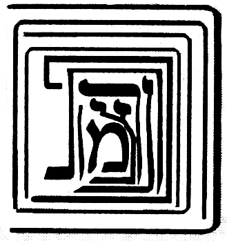
אחר אשר חלפו לנו עידן ועידנין בענין הצורה הזאת שהמציאונו בפרקים הקודמים האיר ה' עיני שכלנו בה והקרה ה' לפנינו קדושים מדברים ושמחנו בהם כעל כל הון לפי שנמצא לנו בהם משען וסמך. ראשונה בעל ספר מאירת עינים וזה טופס לשונו זו היא צורת עמידתן של עשר ספי' בלי מהות ושנוי יתברך ויתעלה שמו וזה שאמר הכתוב (איוב כו ז) תולה ארץ על בלימה ואל תאמר אינו כי ישנו וכאשר תמנה מימינך לשמאלך תמצא עשרה ותראה כי הכתר בית לכלן ומקור כלן נמצא שהקודם לאצילות גדול ומקיף הכל והמאוחר לאצילות קטן ומוקף מהכל וכלול מכלן וזהו כגלדי הבצלים וכמו שהארץ השפלה הזאת היא קטנה והיא באמצע כל הנבראים כחרדלא בעזקתא והנה היא כלולה מכל היסודות והיא באמצע כל כמו לב בגוף האדם, כך כביכול העטרה.
6:5:2 And therefore it is called the land of the living, and the heart. And look and see that the Atarah is composed of the Righteous One [Yesod] and of all the supernal ones, unified with them and encompassed by them all and receiving from them all. And so [too] the Righteous One, and so Hod, and so Netzach, and so Gevurah, and so Chesed, and so Binah—each includes all, and they are unified one in another, and each one is composed of them all, and they are all unified in it; and all is unified in Ein Sof, in the Cause of causes. Thus far [his] words. And it is a proof compelling [to] our view, letter by letter, word by word.
ולפיכך נקראת ארץ החיים והלב. והסתכל ותראה כי העטרה כלולה מהצדיק ומכל העליונים, מיוחדת בהם ומוקפת מכלם ומקבלת מכלם. וכן הצדיק וכן ההוד וכן הנצח וכן הגבורה וכן החסד וכן הבינה כולל הכל ומיוחדים זה בזה וכל א' כלול מכולם וכולם מיוחדים בו והכל מיוחד בא"ס בסבת הסבות עכ"ל. והוא ראייה מוכרחת אל דעתנו אות באות תיבה בתיבה.
6:5:3 And further, we have a proof and a stay in the Zohar, Parashat Terumah (fol. 165a), and these are [the] words: Rabbi Yossi said: There are nine firmaments, and the Shekhinah is the tenth. For should you say [that] because it is written "ten" [the Sefirot are counted] apart from the Shekhinah—if so, the Shekhinah would be the eleventh, standing over ten. Rather, certainly they are nine, and they are the nine days that are between Rosh Hashanah and Yom Kippur, and Yom Kippur is the tenth. In like manner [is] the Mishkan, which is ten curtains. Ten firmaments [are] a secret of secrets that was not delivered except to those who know wisdom. And all is in the secrets of the holy Lamp [Botzina Kadisha], who reveals the secret of each and every firmament and those ministers who serve in each and every one. Seven firmaments are above, and seven firmaments are below, in like manner to that which is above. There are seven firmaments in which are stars and constellations to govern this world, each according to its way, as is required for it. In all of them the seventh is preeminent—except the eighth, which conducts them all and stands over them all, as it is written, "extol Him who rides upon the Aravot." Who is "He who rides upon the Aravot," and what is Aravot? Rather, this Aravot is the seventh firmament. Why is it called Aravot? Because it is composed of fire and water together, from the side of the south and from the side of the north, and it is mixed [me'orav] of the two sides. Thus far [the passage], to our purpose. And the explanation of the passage: above the [present] matter, Rabbi Chiya expounded on the explanation of the verse "And you shall make the Mishkan [of] ten curtains," etc.; and Rabbi Yossi found difficulty in the verse that said "And you shall make the Mishkan [of] ten curtains"—and it is known that the Mishkan is the Shekhinah, Malkhut. If so, how did he say that one should make ten curtains, which are the ten Sefirot, over the Mishkan, which is Malkhut? It turns out, accordingly, that the Sefirot are eleven—and this is the opposite of the truth, that they are ten and not nine, ten and not eleven, as is explained in [the] gate "Ten and Not Nine." For this [reason] he said that the ten curtains do not necessitate ten Sefirot apart from the Shekhinah; rather, "there are nine firmaments." [That is to say,] nine Sefirot alone are over the Shekhinah, and the Shekhinah is the tenth. And he adopted the wording "nine" and did not say "there are ten firmaments and the Shekhinah is one of them"—which would be more precise, [namely] that the Shekhinah too is called a firmament, as is explained from his words. The reason [is] that the place of the error and the mistake was because he said "And [you shall make] the Mishkan," which is the Shekhinah, "[of] ten curtains," as [if] it appears that ten Sefirot are over Malkhut. And to guard ourselves from this corruption [of understanding], he said, against the error, "nine firmaments," and the Shekhinah, which is the Mishkan, is the tenth to the firmaments—and that is what he said, "and the Shekhinah is the tenth." "For should you say [that] because it is written 'ten,'" etc.: that is, that should you wish to say that, from the fact that the verse said "And you shall make the Mishkan [of] ten curtains" and did not say "nine curtains," it appears that they are ten apart from the Shekhinah, God forbid—if so, you will be saying that they are eleven, and the Mishnah in Sefer Yetzirah said "ten and not eleven." And therefore he did not wish to say [otherwise], but [rather], "if so, the Shekhinah is the eleventh." And in his mentioning the words "the eleventh," who does not know the Mishnah that said "ten and not eleven," and "one who adds to ten is not of the [proper] number"? Rather, certainly they are nine, etc. And it is not Rabbi Yossi's intent to say that Yom Kippur is Malkhut and the ten days of repentance are from above downward—for it is already explained in the Zohar and the Tikkunim and in several places that Yom Kippur is in Binah, and the testimony to this [is] the five afflictions; and it is a foretaste of the World to Come, as the Sages, of blessed memory, said (Berakhot, fol. 17a), "In the World to Come there is no eating or drinking," etc. Rather, Rabbi Yossi's intent is only to tell us that the Sefirot are ten, in the likeness of those days, which are only ten. And if the Sefirot were eleven, the days would be eleven. And just as the days are nine and Yom Kippur is the tenth, so it is fitting concerning the matter of the Sefirot, for the Mishkan itself [is] the tenth. And the matter [is] that the ten days of repentance are days that are in repentance, which is Binah; and behold, the yod is repentance itself—that is to say, the supernal grade within it—and it is included in [the] ten days, which are the ten Sefirot, and it is of the [number of the] days. So [too] the matter of the Mishkan itself: it is the tenth curtain and the tenth Sefirah. And the intent of the verse in saying "And you shall make the Mishkan," etc., the intent [is] that you shall make the existence of the Mishkan such that it be composed of ten Sefirot, which are ten curtains, and the whole ten, that is the Mishkan—not that the Mishkan is one and the curtains ten by themselves, as you might have thought, for if so they would amount to eleven; rather, the Mishkan, that is the totality of the ten curtains. And that is what Rabbi Yossi said, "in like manner [is] the Mishkan, which is ten curtains"—[that] is to say, the Mishkan is the gathering of the ten curtains, which is what we say, [that] Malkhut is composed of ten, as we explained in the previous gates and shall explain in [the] gate "Essence and Governance," blessed be He. "A secret of secrets," etc.: he extolled the wisdom and its excellence. "Who reveals the secret in each and every firmament, and those ministers," etc.: the intent [is] that in each attribute [there are] several angels appointed over the matter of the action of that attribute, and the angels receive the power of the action from the supernal roots by means of ministers that draw near to their source—they are those whom we shall explain in [the] Gate of the Holy Palaces. And from those near to the roots, who sit first in the palace of the King, [there] chain down many thousands and myriads of myriads, from grade to grade and from cause to effect, until they reach this world. And this matter has been explained in the words of Rashbi, peace be upon him, [in] places too many to number. And these angels mentioned are called ministers to those supernal firmaments, which are the Sefirot. And that is the intent of Rabbi Yossi here, in his saying "seven firmaments are above"—the explanation [being]: seven Sefirot alone are the principal ministers for the governance of the world; and therefore the building of the world [is] seven days, with the Sabbath day, since the principal governance [is] with these seven. And just as above there are seven conductors, so in the lower firmaments the conductors of the world are seven—that is, the seven planets. And he said that above six firmaments is a seventh firmament, more excellent than the six that are below it, and it is called Aravot, from the language of "mixing" [erev], for in it two attributes are mixed—that is, its blending between judgment and lovingkindness; and Aravot is Tiferet, which mixes them. And he called it "seventh," even though it is fifth below Gedulah and Gevurah, for the reason we explained in [the] Gate of the Order of the Emanation, in chapter six. And he said that there is an eighth firmament riding over all, that is, Binah, which is the mother crouching over the young.
ועוד יש לנו ראייה וסמך בזוהר פ' תרומה (דף קס"ה.) וז"ל ר' יוסי אמר תשע רקיעין אינון ושכינתא איהי עשיראה. דאי תימא בגין דכתיב עשר בר משכינתא איהי, אי הכי שכינתא חד סרי איהי דקיימא על י'. אלא ודאי ט' אינון ואינון ט' יומין דבין ר"ה לי"ה וי"ה איהו עשיראה. כגוונא דא משכן דאיהו י' יריעות. י' רקיעין רזא דרזין דלא אתמסר בר לאינון דידעי חכמתא. וכלא איהו ברזין דבוצינא קדישא דאיהי גלי רזא דכל רקיעא ורקיעא ואינון שמשין דמשתמשי בכל חד וחד. ז' רקיעין אינון לעילא וז' רקיעין אינון לתתא כגוונא דלעילא. ז' רקיעין אינון דבהון כוכביא ומזלות לאנהגא עלמא דא כפום אורחיה כמה דאצטריך ליה. בכלהו שביעאה עדיף. בר תמינאה דקא מדבר לכולהו וקיימא על כלהו. דכתיב סולו לרוכב בערבות. מאן רוכב בערבות ומאן איהו ערבות. אלא ערבות דא רקיעא שביעאה. אמאי אקרי ערבות על דאיהו כליל מאש ומים כחדא מסטרא דדרום ומסטרא דצפון ואיהו מעורב מתרין סטרין. עכ"ל לענייננו. ופי' המאמר, שלמעלה מן הענין דרש ר' חייא בפי' הפסוק ואת המשכן תעשה עשר יריעות וגו', ורבי יוסי הוקשה לו בפסוק שאמר ואת המשכן תעשה עשר יריעות וידוע כי המשכן היא שכינה מלכות וא"כ האיך אמר שיעשה עשר יריען שהן ע"ס על המשכן שהיא המלכות. נמצא לפי"ז שהספירות אחד עשר, וזה הפך האמת שהם י' ולא ט' י' ולא י"א וכמבואר בשער י' ולא תשע. לזה אמר שלא היוד יריעות יחייבו עשר ספירות זולת השכינה. אלא ט' רקיעין אינון. פיר' ט' ספירות לבד הם על השכינה והשכינה היא העשירית. ונקט לישנא דט' ולא אמר י' רקיעין אינון ושכינתא חדא מנייהו שהוא יותר מדוקדק שהשכינה ג"כ נקרא רקיע כמבואר מתוך דבריו. הטעם מפני כי מקום הטעות והשגיאה היה מפני שאמר ואת המשכן שהיא השכינה תעשה עשר יריעות כנראה שעשר ספירות הם על המלכות. ולשמור עצמנו מן השבוש הזה אמר נגד הטעות תשע רקיעין והשכינה שהיא המשכן היא עשירית אל הרקיעין והיינו דקאמר ושכינתא איהי עשיראה. דאי תימא בגין דכתיב עשר וכו'. פי' שאם תרצה לומר כי מטעם שאמר הכתוב ואת המשכן תעשה עשר יריעות ולא אמר ט' יריעות נראה שהם עשר מלבד השכינה ח"ו. א"כ נמצאת אומר שהם אחד עשר והמשנה בס"י אמרה י' ולא י"א. ולכן לא רצה לומר אלא אי הכי שכינתא חד סרי. ובהזכירו מלות חד סרי מי לא ידע המשנה שאמרה עשר ולא אחד עשר והמוסיף על עשר אינו מן השם. אלא ודאי ט' אינון וכו'. ואין כונת רבי יוסי לומר שיום הכפורים היא המלכות וי' ימי תשובה הם מלמעלה למטה. לפי שכבר מבואר בזוהר ובתיקונים ובכמה מקומות כי יום הכפורים הוא בבינה והעד על זה ה' ענויים והוא מעין עולם הבא כמו שארז"ל (ברכות דף י"ז.) העולם הבא אין בו לא אכילה ולא שתייה וכו'. אבל כונת רבי יוסי אינו אלא לומר לנו כי הספירות הם עשר בדמיון אותן הימים שאינם אלא עשר. ואם היו הספירות י"א יהיו הימים י"א. וכמו שהימים ט' ויום הכפורים עשירי כן ראוי לענין הספירות כי המשכן עצמו העשירי. והענין כי עשרת ימי תשובה הם ימים שבתשובה שהיא הבינה והנה היוד היא התשובה עצמה רצה לומר המדרגה העליונה שבה והיא נכללת בעשרה ימים שהם עשר ספירות והיא מכלל הימים. כן ענין המשכן עצמו הוא היריעה העשירית והספי' העשירית. וכונת הכתוב באמרו ואת המשכן תעשה וכו' הכונה כי מציאות המשכן תעשה שתהיה כלולה מעשר ספירות שהם י' יריעות וכל העשר היינו המשכן. לא שהמשכן אחד והיריעות עשר בפני עצמן כדקא ס"ד שאם כן יעלו לאחד עשר, אלא שהמשכן היינו כללות עשר יריעות. וזה שאמר רבי יוסי כגוונא דא משכן איהו יו"ד יריעות, פי' המשכן הוא קבוץ היו"ד היריעות דהיינו מה שאנו אומרים מלכות כלולה מי' וכמו שבארנו בשערים הקודמים ונבאר בשער מהות וההנהג' ב"ה. רזא דרזין וכו', הפליג בשבח החכמה ומעלתה. דאיהו גלי רזא בכל רקיעא ורקיעא ואינון שמשין וכו'. הכונה כי כל מדה כמה מלאכים ממונים על ענין פעולת המדה ההיא והמלאכים מקבלים כח הפעולה מהשרשים העליונים על ידי משרתים המתקרבים אל מקורם הם אותם אשר נבאר בשער היכלות הקדושה. ומאותם הקרובים אל השרשים היושבים ראשונה בהיכל מלך משתלשלים כמה אלפים ורבי רבבות ממדרגה אל מדרגה ומעלה לעלול עד הגיעם אל העולם [הזה]. והענין הזה נתבאר בדברי הרשב"י ע"ה מקומות רבו מספר. ואלו המלאכים הנז' הם נקראים משרתים לאותם הרקיעים העליונים הם הספירות וזהו כונת רבי יוסי הנה באמרו ז' רקיעים אינון לעילא, פירוש ז' ספירות לבד הם המשמשים העקריים להנהגת העולם, ולכן בנין העולם ז' ימים עם יום השבת להיות כי עקר ההנהגה עם הז' האלה. וכמו שלמעלה הם ז' מנהיגים, כן ברקיעים התחתונים המנהיגים העולם הם ז', דהיינו ז' כוכבי לכת. ואמר כי למעלה מששה רקיעים הוא רקיע שביעי משובח מהששה אשר למטה ממנו והוא נקרא ערבות מלשון ערוב שבו מתערבות ב' מדות דהיינו מזיגתו בין הדין והחסד והערבות הוא התפארת המערבם וקראו שביעי עם היותו חמשי למטה מגדולה וגבורה מן הטעם שבארנו בשער סדר האצילות בפ"ו. ואמר שיש רקיע שמיני רוכב על הכל, דהיינו הבינה שהיא האם הרובצת על הבנים.
6:5:4 And behold, the explanation of the passage is comprised, and from it we have learned the matter of the Emanation—that they are in the likeness of the spheres that surround this world, this within that, like the layers of an onion; and for this reason he called them firmaments, and their governance [is] like the governance of the lower firmaments, and they are spheres encompassing all that is within them, like a mustard-seed in a ring. And blessed is God, who made His lovingkindness wondrous to us in a besieged city, and we found ourselves corroboration and a stay from the words of the Zohar—[they are] all of them according to Rashbi, as is known—and there is no doubt in this matter.
והנה נכלל ביאור המאמר ומתוכו למדנו ענין האצילות שהם כדמות הגלגלים הסובבים העולם הזה זה בתוך זה כגלדי בצלים ומטעם זה קראם רקיעים והנהגתם כהנהגת הרקיעים התחתונים והם גלגלים מקיפים כל אשר בתוכם כחרדלא בגו עזקתא. וברוך ה' אשר הפליא חסדו לנו בעיר מצור ומצאנו לנו סעד וסמך מתוך דברי הזוהר קראי כולהו אליבא דרשב"י כנודע ואין לענין זה ספק:
6:6:1 After we elaborated, in the previous chapter, on the figure of the Emanation and its standing, and established it and confirmed it and upheld it as is fitting—it is fitting to see that this figure is found to demolish the whole edifice that we built in the previous chapters concerning the matter of the figure of the Emanation, [namely] that they are three rights and three lefts and three middle [ones]. And accordingly, this is not [consonant] with its [other] figure, for they are all one within another and there is in them neither right nor left. Now, [since] this and that are the words of Rashbi, it is not fitting to say that his words contradict one another, some of them against others. And likewise the author of Sefer Me'irat Einayim, who wrote that figure that we wrote above in chapter two, and afterward wrote this figure and retracted within the span of an utterance—and he said above that one who denies the first figure is [of] a generation of perversities, etc.—and this is very strained. And to resolve this matter, let us say: a question was asked among the investigators concerning the angels, which they designated by the name "separate intellects," and they said: since they are simple, spiritual, and far from all the accidents of body, if so, by what are they distinguished into the number ten? And Rambam, peace be upon him, wrote the matter of this question in the second [chapter] of Hilkhot Yesodei ha-Torah, and these are [his] words: "And by what are the forms distinguished one from another, seeing that they are not bodies?" And he answered: because they are not equal in existence, but each one of them is below the rank of its fellow, and it exists from its [fellow's] power, this above that, and all exist from the power of the Holy One, blessed be He. Thus far [his] words.
אחר שבפרק הקודם הארכנו בפ' צורת האצילו' ועמידתן והכרחנוהו ואשרנוהו וקיימנוהו כדחזי. ראוי לראות כי נמצא הצורה הזאת הורסת כל הבנין שבנינו בפרקים הקודמים מענין צורת האצילות שהם ג' ימינים וג' שמאלים וג' אמצעיים. ולפי"ז אין זה לצורתו כי כלם זב"ז ואין בהם לא ימין ולא שמאל. השתא הא והא הם דברי הרשב"י, ואין ראוי לומר שיהיו חולקים דבריו קצתם אל קצתם. וכן בעל ספר מאירת עינים, שכתב הצורה ההיא שכתבנו לעיל בפרק ב', ואחר כך כתב הצורה הזו וחזר בו תוך כדי דבור, והוא אמר לעיל שהמכחיש הצורה ראשונה דור תהפוכות וכו', וזה דוחק גדול. ולתקן הענין הזה נאמר שאלה נשאלה בין החוקרים בענין המלאכים אשר כנו אותם בשם שכלים נבדלים ואמרו כי אחרי שהם פשוטים רוחניים ורחוקים מכל מאורעי הגוף אם כן במה יפרדו אל מנין העשרה. וכתב ענין השאלה הזאת הרמב"ם ע"ה בפ"ב מהלכות יסודי התורה וז"ל ובמה יפרדו הצורות זו מזו והם אינם גופים. ותירץ לפי שאינם שווים במציאות אלא כל אחד מהם למטה ממעלתו של חבירו, והוא מצוי מכוחו זה למעלה מזה, והכל נמצאים מכח של הקב"ה עכ"ל.
6:6:2 And the intent [is] that he there elaborated on the negation of body and its accidents in [the case of] the angels, and it was difficult for him: since they are far from the accidents of body, and since existents equal in existence are not distinguished one from another except by the accidents of body, and since the angels have no accidents of body—if so, by what are they distinguished, [such] that they are ten grades, as he himself counted? And he answered: because they are not equal in their existence. The explanation [is] that it is true [that] those equal in their existence are not distinguished except by the accidents of body; and the angels, which are distinguished even though they have no accidents of body—the reason is because they are not equal in their existence, but [are] effects one of another, and each one of them is below the rank of its fellow, etc. And the master Rabbi Shem Tov ben Shem Tov, in Sefer ha-Emunot, Gate 4, chapters one, two, [and] three, established with clear proofs that their view is not correct. And these are [his] words: Behold, according to their view, there is nothing between the Cause of causes and them except that this one is a cause to the effects [proceeding] from it; and we have no power to know a single thing of [any] difference between the First Cause and the last of them, etc., except [the relation] from cause to effect—that is to say, they are all unified in a complete unity, for there is among them neither conjunction nor separation, and they have no place at all, for they are not body nor a force in body, but [are] separate intellect[s]; but the cause is above what it causes and the cause is above its effect, and it turns out that the First Cause is a cause to them all, and the first effect is a cause to all the effects that are below it, and they are above the lower ones.
והכוונה כי הוא הפליג שם בשלילות הגוף ומאורעיו במלאכים והוקשה לו כי אחר שהם רחוקים ממאורעי הגוף ואחר שאין הנמצאים השוים במציאות נפרדים זה מזה אלא במאורעות הגוף ואחר שהמלאכים אין להם מאורעי הגוף א"כ במה יפרדו להיותם עשרה מדרגות כמו שמנה הוא בעצמו. ותירץ לפי שאינם שווים במציאותם. פי' כי אמת הוא כי השוים במציאותם לא יפרדו אלא במאורעי הגוף והמלאכים שהם נפרדים עם היות שאין להם מאורעי הגוף הטעם הוא מפני שאינם שוים במציאותם אלא עלולים זה מזה וכ"א מהם למטה ממעלתו של חבירו וכו'. והרב ר' שם טוב בן שם טוב בספר האמונות שער ד' פרק א' ב' ג' הכריח בראיות ברורות שאין דעתם צודקת. וז"ל הנה לדעתם אין בין עילת העילות אליהם אלא שזה עלה אל העלולים ממנו ואין בנו כח לידע דבר אחד מחילוף בין הסבה הראשונה לאחרון מהם וכו' כי אם מעילה לעלול כלומר כלם יתיחדו באחדות גמור כי אין ביניהם לא חבור ולא פירוד ואין להם מקום כלל כי אינם גשם ולא כח בגשם אלא שכל נבדל אבל הסבה למעלה מן המסובב והעילה למעלה מן העלול ונמצא שהסבה הראשונה סבה לכלם והעלול הראשון עילה לכל העלולים שלמטה ממנו והם למעלה מן התחתונים.
6:6:3 And further, the master refuted this view concerning the angels, because it is compelling from the words of the Sages, of blessed memory, that the angels were created on the second day or on the fifth day, according to what the Sages, of blessed memory, disputed in this (in Bereshit Rabbah, ch. 3); and he said that if the angels were [as] the unity of the [divine] Name, how is it possible to say that they were created after the creation of heaven and earth? And it is impossible, just as it is impossible to say that they preceded the First Cause.
ועוד הרב הכחיש סברא זו במלאכים מפני שהוכרח בדברי רז"ל שהמלאכים נבראו ביום ב' או ביום ה' כפי מה שנחלקו בזה חז"ל (בב"ר פ"ג) ואמר שאם היו המלאכים כאחדות השם איך אפשר לומר שאחר בריאת שמים וארץ נבראו והוא נמנע כמו שנמנע לומר שקדמו לסבה ראשונה.
6:6:4 And further, how does the language of "creation" [rightly] apply to them?
ועוד איך צודק בהם לשון בריאה.
6:6:5 And further, he established [the point] from Parashat Vayera, from the vision of Abraham, who saw them in the likeness of men, and he established there that it cannot rightly be said that it was in a prophetic vision. Thus far his objections.
ועוד הכריח מפ' וירא אליו ממראה אברהם שראה אותם כדמות אנשים והכריח שם כי לא יצדק לומר שהיה במראה הנבואה. עכ"ל השגותיו.
6:6:6 And behold, he established, on the basis of these questions, that they [the angels] are subtle beings, corporealizing themselves in a subtle and pure body; and for this he adduced [proofs] from the words of the Sages, of blessed memory, as we shall explain in the Gate of the Palaces, with God's help. And now we ourselves ask concerning the matter of the Sefirot, exactly like their question: since we elaborated, in the previous gates, on the matter of the Sefirot and their distancing from body and its accidents—if so, by what are they distinguished, if they are equal in their existence? And we shall answer according to their answer, that their distinction is in that they are not equal in their existence: for Keter exists from Ein Sof, and not so Chokhmah, whose existence is from Keter; and not so Binah, which exists from Chokhmah; and not so Chesed, whose existence is from Binah; and not so Gevurah, whose existence is from Chesed; and not so Tiferet, whose existence is from Gevurah; and not so Netzach, whose existence is from Tiferet; and not so Hod, whose existence is from Netzach; and not so Yesod, whose existence is from Hod; and not so Malkhut, whose existence is from Yesod. And behold, now they are distinguished one from another, in that each one is a cause to its fellow. And now, concerning the Sefirot, what Rabbi Shem Tov found difficult in the words of Rambam will not be difficult for us, because the Sefirot preceded the creation of heaven and earth and do not fall under time, but on the contrary, they are a root to time. For the six Sefirot are a root to the six days, and the seventh is the Sabbath day, as will be explained in the Glossary of Titles, with God's help. And concerning them the Sages, of blessed memory, said (Bereshit Rabbah, ch. 3), "this teaches that an order of times existed before this." And it will also not be difficult for us [to explain] that they appeared to the prophets, for the prophets never apprehended the very Sefirot themselves at all; and even to Moses our teacher, peace be upon him, it was said (Exodus 33:23), "and you shall see My back," etc. And what we say, that the prophecy of Moses our teacher was in Tiferet and [that] of the other prophets in Malkhut—and likewise what we say, that Netzach and Hod are the two prophets of truth—the intent in all this is not that they apprehended the Sefirot literally, but [rather] that from there [is] their nourishment; but their intellection was in the palaces. And so Rashbi, peace be upon him, explained, as we shall explain in the Gate of the Palaces, in chapter two, in the second palace, with God's help. Since his difficulties will not be difficult for us, if so, when we ask: since the Sefirot are belimah, as we explained in the previous gates, [then] by what are they distinguished?—we too shall say that they are distinguished in that the one is a cause to its fellow, as if we should mean that there is no distinction between Keter and its Emanator except that the Emanator is a cause to the emanated. And beyond this they are unified [in] the utmost union; but between Ein Sof and Keter, by reason of Keter['s] being emanated and not Emanator, and Ein Sof Emanator and not emanated, there is much distinction, as explained above in the Gate of Whether the Ein Sof is the Keter and in the Gate of Self and Vessels. And this is clear, that Keter is emanated and Ein Sof the Emanator [is] not emanated. But by reason of their descent, the Sefirot do not descend from it except in the manner [of relation] that [obtains] between Emanator and emanated and that [obtains] between cause and effect; and likewise Chokhmah descends from Keter, and Binah from Chokhmah, and likewise the other Sefirot, like the descent of the effect from the cause. And the matter [is] that Malkhut apprehends Yesod, but not to the measure that it apprehends itself. And Yesod apprehends itself, and apprehends Malkhut with [a] more complete [apprehension] than Malkhut apprehends itself. And likewise it does not apprehend Hod to the measure that it apprehends itself. And Hod apprehends itself more than Yesod apprehended [it]. And likewise it apprehends Malkhut with [a] greater apprehension than Yesod apprehends [it], and how much more so Malkhut itself. And likewise Netzach—its knowledge of itself will be more elevated than Hod apprehends [it]. And likewise Yesod apprehends [it] more than Hod apprehends [it], and how much more so Yesod [apprehends] itself. And likewise it apprehends Malkhut more than Yesod apprehends [it], and how much more so Malkhut itself. And in this manner, too, the apprehension of Yesod in Hod will be more elevated than the apprehension of Malkhut in Hod; and likewise the apprehension of Hod in Netzach will be more elevated than the apprehension of Yesod [in it]; and likewise their apprehensions, one over another, will be elevated, up to the first grade.
והנה הכריח על פי השאלות האלה שהם הויות דקות מתגשמים בגוף דק וזך ולזה הכריח מדברי רז"ל וכמו שנבאר בשער ההיכלות בס"ד. ועתה נשאל אנחנו בענין הספירות כשאלתם ממש שאחר שהפלגנו בשערים הקודמים בענין הספירות והרחקם מן הגוף ומאורעיו א"כ במה יפרדו אם הם שוים במציאותם. ונשיב כפי תשובתם שהפרדם הוא במה שאינם שוים במציאותם כי הכתר מצוי מא"ס ולא כן חכמה שמציאותה הוא מן הכתר ולא כן הבינה שהיא מצויה מן החכמה ולא כן החסד שמציאותה מן הבינה ולא כן הגבורה שמציאותה מן החסד ולא כן הת"ת שמציאותה מן הגבורה ולא כן הנצח שמציאותה מן הת"ת ולא כן ההוד שמציאותה מן הנצח ולא כן היסוד שמציאותה מן ההוד ולא כן המלכות שמציאותה מן היסוד והנה עתה הם נפרדות זו מזו במה שכל א' עילה לחברתה. ועתה בספירות לא יקשה עלינו מה שהקשה הרש"ט לדברי הרמב"ם. מפני שהספי' קדמו אל בריאת שמים וארץ ואינם נופלים תחת הזמן, אלא אדרבא הם שרש אל הזמן. כי ו' ספירות הם שרש ו' ימים, ושביעית יום שבת. כאשר יתבאר בשער ערכי הכנוים בע"ה. ועליהם אז"ל (בב"ר פ"ג) מלמד שהיה סדר זמנים קודם לכן. וגם לא יקשה עלינו שנראו לנביאים, שמעולם לא ראו הנביאים עצם הספירות ממש, ואפילו למשה רבינו ע"ה נאמר שמות לג כג) וראית את אחורי וכו'. ומה שאנו אומרים שנבואת מרע"ה בת"ת ושאר הנביאים במלכות. וכן מה שאנו אומרים כי נצח והוד הם ב' נביאי קשוט. אין הכוונה בכל זה שהיו משיגים ממש בספירות, אלא שמשם יניקתם. אבל השכלתם הי' בהיכלות. וכן פי' הרשב"י ע"ה כמו שנבאר בשער היכלות בפ"ב בהיכל שני בס"ד. כיון שלא יקשה עלינו קושיותיו. א"כ כשנשאל מאחר שהספירות בלימה כדפי' בשערים הקודמים א"כ במה יבדלו. אף אנו נאמר שהם נבדלות במה שהאחת עילה לחברתה כאלו נרצה שאין הבדל בין הכתר למאצילו אלא שהמאציל עילה אל הנאצל. ואל היותר מזה הם מיוחדים תכלית היחוד אבל בין הא"ס והכתר בסבות היות הכתר נאצל ולא מאציל וא"ס מאציל ולא נאצל הבדל הרבה יש כדפי' לעיל בשער אם הא"ס הוא הכתר ובשער עצמות וכלים. וזה ברור כי הכתר נאצל והא"ס המאציל לא נאצל. אבל מצד רדתם הספירות מאתו אינם יורדות אלא בענין שבין מאציל לנאצל ומה שבין עילה ועלול וכן יורדת החכמה מהכתר והבינה מחכמה וכן שאר הספירות כירידת העלול מן העילה. והענין כי המלכות משיג היסוד אבל לא כשיעור שישיג את עצמו. והיסוד משיג עצמו ומשיג המלכות ביותר שלימות שישיג המלכות את עצמו. וכן אינו משיג בהוד כשיעור שישיג את עצמו. וההוד משיג את עצמו יותר ממה שהשיג היסוד. וכן משיג המלכות ביותר השגה ממה שישיג היסוד וכ"ש המלכות בעצמה. וכן הנצח תתעלה ידיעתו את עצמו ממה שישיג ההוד. וכן ישיג היסוד יותר ממה שישיג ההוד וכ"ש היסוד. וכן ישיג המלכות יותר ממה שישיג היסוד וכ"ש המלכות עצמה. ועל דרך זו ג"כ יתעלה השגת היסוד בהוד מהשגת המלכות בהוד וכן תתעלה השגת ההוד בנצח מהשגת היסוד וכן תתעלה השגתם זו על זו עד המדרגה הראשונה.
6:6:7 And this matter [is] a great principle in [the realm of] existence, as we shall expand the explanation in Sefer Or Yakar, with God's help. And we know that it will be difficult in the eyes of the examiner that, accordingly, it turns out that Chokhmah is not unified with the Emanator, and likewise Binah with Keter—since that which is an effect from it, this is its cause, and the bond of the effect [is] with its cause, not with the cause of its cause, intrinsically. We shall answer to this: that it is true [that] the questioner has aimed well and is right in his ruling that they are not unified from this side; but they are unified from another side, each one in them all and all in each one, by [virtue of] the aspect of their inclusiveness from [the number] ten.
וענין זה עיקר גדול במציאות כאשר נרחיב ביאור בספר אור יקר בס"ד. וידענו שיקשה בעיני המעיין שא"כ נמצאו שהחכמה אינה מתייחדת עם המאציל וכן בינה עם הכתר מאחר שמה שהוא עלול ממנו זו עילתו וקשר העלול עם עלתו לא עם עלת עלתו בעצם. נשיב על זה כי אמת הוא יפה כוון השואל וצדק בגזרתו שאינם מיוחדים מצד זה, אבל הם מיוחדים מצד אחר כל אחד בכלם וכלם בכל אחד בערך בחי' כללותם מיו"ד.
6:6:8 And behold, accordingly, Keter has with Gevurah ten unifications, namely: the Keter-within-Keter with the Keter-within-Gevurah, and the Chokhmah-within-Keter with the Chokhmah-within-Gevurah, and in this manner the other grades; and so for all the Sefirot. And since it has been explained that, by way of inclusiveness, the Sefirot ascend in their manifestations without end—as we shall explain in the Gate of Essence and Governance, chapter two, with God's help—therefore [the matter] will ascend in unification without end. And this is by [reference to] the [relative] measure of their unification and their bond [as] the emanated [Sefirot] themselves. But in the Emanator they are unified in two respects: the one, by [reference to] their bond with their hidden root above, as is explained in the Gate of Tzachtzachot; and the second, in the aspect of the light of the Self that spreads within the grades, which is the Self of the Godhead, not divided into these parts except by means of the Sefirot, as explained in the Gate of Self and Vessels. And the Self that spreads is unified in its source, like the ray of the sun unified in the sun, and in the likeness of the soul unified in its powers that spread through the body. And the Sefirah itself is unified in the Self that spreads [in the] utmost union, just as the soul is unified with the body, for reasons that we shall explain in the Gate of the Soul.
והנה לפי"ז יש לכתר עם הגבורה יו"ד יחודים והם כתר שבכתר עם כתר שבגבורה והחכמה שבכתר עם חכמה שבגבורה ועד"ז שאר המדרגות וכן לכל הספירות. ואחר שנתבאר כי על דרך הכללות עולה הספי' במציאותי' לאין תכלית כמו שנבאר בשער מהות והנהגה פרק ב' בס"ד. ולפיכך יעלה ביחוד לאין תכלית וזהו בערך יחודם וקשורם הנאצלים הם בעצמם. ובמאציל הם מתייחדים בשתי פנים האחד בערך קשורם עם שרשם הנעלם למעלה כמבואר בשער הצחצחות. והב' בבחינת האור העצמות המתפשט בתוך המדרגות שהוא עצם האלקות בלתי מתחלק לחלקים האלה אלא ע"י הספירות כדפי' בשער עצמות וכלים. והעצם המתפשט מיוחד במקורו כנצוץ השמש המיוחד בשמש וכדמיון הנפש המיוחדת בכחותיה שמתפשטות בגוף. והספי' עצמה מתייחדת בעצם המתפשט תכלית היחוד כמו שמתייחד הנפש עם הגוף לסבות כאשר נבאר בשער הנשמה.
6:6:9 And behold, after the matter of their bond and the matter of their unification and the matter of their distinction have been explained—that they are in the likeness of cause and effect, cause and what it causes—the Emanation is found [to be] a jointed lampstand, [its parts] unified and bound [in] the utmost union, bond, and longing. And concerning this matter a covenant was cut for those who occupy themselves with the wisdom of the Pardes. And this was the claim of Elisha, [namely] that through this he became Acher [the Other]. And this was the sin of Adam the First, who came to dismantle the tent and was found dismantling on the Sabbath, and therefore he was [held] liable. And one who contemplates this matter, [this] occupation, must beware lest he do according to their pattern; and therefore let the examiner occupy himself with this chapter, and in it he will find rest for his soul, and his soul will abide in well-being, and he will dwell secure with none to make him afraid.
והנה אחר שנתבאר ענין קשורם וענין יחודם וענין הבדלם שהם כדמיון עילה ועלול סבה ומסובב נמצא האצילות מנורה של פרקים מיוחדים ומקושרים תכלית היחוד והקשר והחשק. ועל ענין זה נכרת ברית למתעסקים בחכמת הפרדס. וזה הי' טענת אלישע שע"י כך נעשה אחר. וזה היה חטא אדם הראשון שבא לפרק את האהל ונמצא מפרק בשבת ולכן חייבו. והמתבונן ענין זה העסק צריך ליזהר שלא יעשה כתבניתם, ולכן המעיין יעסוק בפרק זה ובו ימצא מרגוע לנפשו ונפשו בטוב תלין ושכן לבטח ואין מחריד:
6:7:1 After the matter of the bond of the Sefirot among themselves and their bond with the Emanator has been explained in the previous chapter—when the examiner contemplates it with good diligence, he will find good taste and knowledge and the compelling [force] of the matter of itself, and the truth will show its way. And he will find, accordingly, [that] the Sefirot—when we come to liken them and to depict them, by way of likeness, to the human intellect—[one] will be compelled to believe that they are one above another. For Ein Sof the Emanator is the Cause of all causes and the Source of all causes, and the first effect from it is Keter; and Keter [is] a cause and a cause to Chokhmah, by the power of the Emanator that overflows from its light upon it; and Chokhmah is a cause and a cause to Binah, by the power of the Emanator, by means of Keter, in [its] emanating the light of the Emanator by means of the first emanated [one], Keter, upon it. And so for all the rest of the Emanation: for Binah [is] a cause to Chesed, and Chesed a cause to Gevurah, and Gevurah a cause to Tiferet, and Tiferet a cause to Netzach, and Netzach a cause to Hod, and Hod a cause to Yesod, and Yesod a cause to Malkhut. Behold, they are ten grades, ordered one above another, thus: Keter, Chokhmah, Binah, Gedulah, Gevurah, Tiferet, Netzach, Hod, Yesod, Malkhut. And of what is fitting to know [is] that, apart from this order, they have another order. And the reason for this [is] that each Sefirah has two causes: the one, its cause—that after the preceding [one] was emanated, it was emanated. The example of this [is] that even though the true cause of Netzach is Chesed, nonetheless, because of the order of its emanation, its cause is none but Tiferet, as we elaborated concerning the matter of their emanation in the Gate of the Order of the Emanation, in chapter six.
אחר שנתבאר מתוך הפרק הקודם ענין קשר הספי' בעצמם וקשורם עם המאציל, כאשר יתבונן המעיין בו בטוב השקידה ימצא טוב טעם ודעת והכרח הענין מעצמו והאמת יורה דרכו. וימצא לפי"ז היות הספירות כאשר נבא להמשילם ולציירם ע"ד דמיון אל השכל האנושי יוכרח להאמין שהם זו למעלה מזו. מפני כי הא"ס המאציל הוא עלת כל העלות וסבת כל הסבות והעלול הראשון ממנו הוא כתר וכתר סבה ועילה לחכמה מכח המאציל השופע מאורו עליו וחכמה הוא סבה ועילה לבינה מכח המאציל ע"י הכתר בהשפיע אור המאציל ע"י הנאצל הראשון כתר עליו. וכזה לכל שאר האצילות כי בינה עילה וסבה לחסד וחסד עלה וסבה לגבורה וגבורה עלה וסבה לת"ת ות"ת עלה וסבה לנצח ונצח עלה וסבה להוד והוד עלה וסבה ליסוד ויסוד סבה ועלה למלכות. הרי הם עשר מדרגות מסודרות זו למעלה מזו כזה כתר חכמה בינה גדולה גבורה תפארת נצח הוד יסוד מלכות. וממה שראוי לדעת כי בזולת הסדר הזה יש להם סדר אחר. וטעם לזה כי לכל ספירה ב' עלות. והם הא' עילתו שאחר שנאצלה הקודמת נאצלה היא. המשל בזה כי אעפ"י שעילתו האמיתית של הנצח הוא החסד עכ"ז מפני סדר אצילותו עילתו אינו אלא התפארת כמו שהארכנו בענין אצילותם בשער סדר האצילות בפ"ו.
6:7:2 And behold, they have two aspects to their cause and their source: the one, the order that we explained above, one upon another up to the ten; the second, the order of their effluence and their source, according to their division. There is [one] whose aspect is lovingkindness [Chesed], and it must incline to the line of Chesed; and there is [one] whose aspect is judgment [Din], and it must incline to the line of Din; and there is [one] whose aspect is mercy [Rachamim], and it must incline to the line of Rachamim, and it aligns itself between these two lines, toward the mean.
והנה נמצאו להם ב' בחינות אל עלתם. וסבתם האחד הסדר שפירשנו למעלה זו על זו עד העשר. השני סדר שפעם ומקורם לפי חלוקם יש שבחינתה חסד וצריך היותה נוטה אל קו החסד ויש שבחינתה דין וצריך נטייתה אל קו הדין. ויש שבחינתה רחמים וצריך נטייתה אל קו הרחמים והיא מתיישרת בין שני הקוין האלה אל המיצוע.
6:7:3 And behold, the matter of these their aspects is their subsistence and their effluence that is poured out upon them. And it turns out, accordingly, that they have two aspects to their causes: the first aspect, the cause of the order, as explained; the second aspect is the nourishment and the effluence and the subsistence. And even though, from the side of the aspect [pertaining] to the order of the emanation, their order [being] one above another is compelling—when we look to the side of their nourishment, which is the cause of their subsistence, they are found [to be] in another arrangement; for we see [that] Keter emanates into Chokhmah and into Binah—if so, it is compelled from this that it is the cause of both of them. And from another side it is compelled that Chokhmah is the cause of Binah and Keter the cause of Chokhmah—if so, it is compelled that [they] be ordered in the likeness of a segolta, thus:
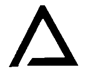
והנה ענין בחינתם אלה הוא קיומם ושפעם הנשפע עליהם. ונמצא לפי זה להם ב' בחינות אל סבותם. בחי' ראשונה סבת הסדר כדפי'. בחינה שנייה היא היניקה והשפע והקיום. ואעפ"י שמצד הבחינה אל סדר האצילות הוכרח סדרם זו למעלה מזו. כשנביט אל צד יניקתם אשר הוא סבת קיומם נמצאים בענין אחר כי אנו רואים כ"ע משפיע אל החכמה ואל הבינה א"כ יוכרח מזה היותו סבת שתיהם. ומצד אחר יוכרח היות חכמה סבת הבינה והכתר סבת החכמה א"כ יוכרח היות מסודרת כדמות סגולתא כזה.
6:7:4 Keter; and one channel, which indicates the preceding cause—and their order is Keter, Chokhmah, Binah. And from the side of Keter's emanating into Binah, it is necessitated that there be a channel from Keter to Binah; and the matter of the channels will be explained in a gate of its own. And from the side of Chokhmah's emanating into Chesed, and Binah into Gevurah, it is compelled that Chesed be beneath Chokhmah and Gevurah beneath Binah—which indicates that Chokhmah is the cause of Chesed and Binah the cause of Gevurah. And from the side of Tiferet's drawing sustenance from Keter and from Chesed and from Gevurah, it is compelled that it be opposite it, indicating that its cause is Keter. And from the side of its drawing sustenance from Chesed and from Gevurah, it is compelled that it be between the two of them, to indicate that it is caused by both of them. And from the side of its being sixth in the Emanation, it is compelled that it be drawn somewhat below the two of them, as we have depicted. And from the side of Netzach's being seventh in the Emanation, it is compelled that it draw sustenance from Tiferet. And from the side of its drawing sustenance from Chesed, it is compelled that it be beneath Chesed. And so Hod, in this way, [is] beneath Gevurah. And Yesod is compelled to be beneath Tiferet, for from there is its principal nourishment, and it is its cause from the side of the pouring-forth [of effluence]. And from the side of its drawing sustenance from Netzach and Hod, it is likewise compelled that it be between the two of them. And from the side of its being ninth to them all, it is compelled that it be drawn downward, to beneath them all, as we have depicted.
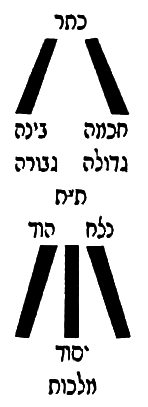
כתר וצנור א' המורה על הסבה הקודמת והם סדרן כתר חכמה בינה. ומצד היות הכתר משפיע אל הבינה יתחייב היות צנור מכתר אל הבינה, וענין הצנורות יתבאר בשער בפ"ע. ומצד היות חכמה משפעת בחסד והבינה בגבורה יוכרח היות חסד תחת חכמה וגבורה תחת בינה שהוא מורה כי החכמה סבת החסד והבינה סבת הגבורה. ומצד היות הת"ת יונק מן הכתר ומן החסד ומן הגבורה יוכרח היותו כנגדו מורה שסבתו הוא הכתר. ומצד היותו יונק מן החסד ומן הגבורה יוכרח היותו בין שניהם להורות שהוא מסובב משניהם. ומצד היותו ששי אל האצילות יוכרח היותו נמשך קצת למטה משניהם כאשר ציירנו. ומצד היות הנצח שביעי לאצילות יוכרח היותו יונק מן התפארת. ומצד היותו יונק מן החסד יוכרח היותו תחת החסד. וכן הוד ע"פ דרך זה תחת הגבורה. ויסוד יוכרח היותו תחת הת"ת כי משם עיקר יניקתו והוא סבתו מצד ההשפעה. ומצד היותו יונק מן הנצח וההוד יוכרח ג"כ היותו בין שניהם. ומצד היותו תשיעי לכלם יוכרח היותו נמשך למטה אל תחת כלם כאשר ציירנו.
6:7:5 And Malkhut, from the side of its being tenth, below Yesod, is drawn below Yesod.
ומלכות מצד היותה עשירית למטה מהיסוד נמשכת למטה מן היסוד.
6:7:6 And behold, after the matter of the agreement of the figures upon one matter has been explained, it is fitting to explain this matter that is found in the Zohar many times: "ascending and descending" [salka ve-nachta].
והנה אחר שנתבאר ענין הסכמת הצורות אל ענין אחד ראוי לבאר ענין זה הנמצא בזוהר פעמים רבות סלקא ונחתא.
6:7:7 And behold, the matter of ascent and descent indicates corporeality, and this does not properly apply at all; and with this premise all will be explained. Namely: since the matter of their being one above another does not intend the existence of place, God forbid, as we have explained, but rather the matter of rank and priority from cause to effect, as explained above at length—
והנה ענין עליה וירידה הוא מורה על הגשמות וזה אינו צודק כלל, ועם ההקדמה הזו יתבאר הכל. והוא כי אחר שענין היותם זו למעלה מזו אין הכוונה על מציאות המקום ח"ו כאשר בארנו אלא על הענין המעלה והקדימה מעילה לעלול כמבואר לעיל בארוכה.
6:7:8 behold, the matter of ascent and descent likewise will be in this way. As, for example, Malkhut: before she was driven down to the tenth grade, she was in the seventh grade, beneath Tiferet, in her rank and her subtlety, so much so that she was a cause to Netzach and Hod and Yesod. And when sin caused [it] and she was driven from her place, she descended, and her lights were coarsened and darkened, until she does not have the capacity to be a cause to Netzach and Hod; rather, on the contrary, she is their effect and needs them and receives light and effluence from them—and this is the matter of her descent. And so the matter of her ascent: that she be refined so much that she return to Tiferet, and Tiferet be her cause, and she be a cause to all that is beneath Tiferet, owing to the abundance of her brilliance and her light. And likewise, in this way, when we say that one attribute among the attributes ascends to another attribute higher than it, the intent is this matter: that because of the effluence that that higher attribute poured into the lower attribute, it was refined until it ascends from grade to grade, until it becomes a cause to the other attributes that are beneath the attribute that overflows upon it—and this is called that that attribute "ascended" to the other. And therefore it is explained in the Zohar many times, and in particular in the Commandments [Pikkudin], the commandment "to bless" (in Parashat Ekev, fol. 271a), etc., that it is impossible for any attribute to ascend to another attribute unless it first receives from it abundant effluence in its [own] place, so that, by the measure of the abundance of the effluence, so will it be raised from grade to grade. And there are times when the effluence is not so intensified, and it does not ascend as far as the attribute that overflows upon it, but to another attribute that is beneath it, and from there it receives from it—like Malkhut, who at times ascends as far as Yesod alone, to receive effluence from her husband, Tiferet; and this indicates that Malkhut was refined until she ascended from being tenth to the ninth, and was not refined so much as to be actually seventh, near to Tiferet; rather, from that grade she receives from him. And this is the matter of ascent and descent mentioned in the Zohar concerning the attributes; and this is enough of a remark on this matter. And with this the interpretation of all the matters has been explained, and [that] the figure agreed upon in the mouth of all the Kabbalists is the truest—and not that there is an actual figure there, God forbid, nor a place of their standing, nor face nor back, nor right nor left, except from the side of Din or of Rachamim, according to their nourishment, each and every one according to its pouring-forth and its nourishment. And indeed, the key to all these matters is that being a cause or an effect [and the grades' being one beneath another — from Asis Rimonim] is in the two ways explained above; and with this it is clear that sometimes this depiction will obtain and sometimes another, all according to the pouring-forth [of effluence]—though it is true that this is the customary and the constant one.
הנה ג"כ ענין העליה והירידה תהיה על דרך זו כמו המשל המלכות היותה קודם שנטרדה למטה במדרגה העשירית היתה במדרגה שביעית תחת הת"ת במעלתה ודקותה כל כך עד שהיא היתה סבה אל הנצח וההוד והיסוד. וכאשר גרם העון ונטרדה ממקומה ירדה ונתעבו וחשכו מאוריה עד שאין בידה סיפוק להיותה סבה אל הנצח וההוד אלא אדרבה היא עלולה מהם וצריכה אליהם ומקבלת מהם אור ושפע וזו היא ענין ירידתה. וכן ענין עלייתה שתזדכך כל כך עד שתשוב אל הת"ת ויהיה הת"ת עילתה והיא עילה וסבה אל כל אשר תחת הת"ת לרוב בהיקותה ואורה. וכן עד"ז כאשר נאמר שתעלה מדה מן המדות אל מדה אחרת עליונה ממנה הכוונה על הענין הזה כי מפני השפע שהשפיעה המדה ההיא העליונה במדה התחתונה נזדככה עד שתעלה ממדריגה אל מדריגה עד היותה עילה אל שאר המדות שהם תחת המדה השופעת עליה וזה יקרא שעלתה המדה ההיא אל האחרת. ולכן נתבאר בזהר פעמים הרבה ובפרט בפקודין פקודא לברכא (בפ' עקב דף רע"א) וכו' שא"א אל שום מדה לעלות אל מדה אחרת אם לא שתקבל ממנה קודם שפע רב במקומה כדי שע"י שיעור רבוי השפע כן תתעלה ממדרגה למדרגה. ויש פעמים שלא יוגבר השפע כ"כ ולא תעלה עד המדה השופעת עליה אלא אל מדה אחרת אשר תחתיה ומשם תקבל ממנה כמו המלכות העולה לפעמים עד היסוד לבד לקבל שפע מבעלה הת"ת וזה מורה כי נזדככה המלכות עד שעלתה מהיותה עשירית אל הט' ולא נזדככה כל כך להיותה ממש שביעית קרובה אל הת"ת אלא מן המדרגה ההיא תקבל ממנו. וזהו ענין עליה וירידה הנז' בזוהר במדות, ודי בזה הערה בענין הזה. ובזה נתבאר פשר כל הדברים והצורה המוסכמת בפי כל המקובלים היותר אמיתית ולא שתהיה שם צורה ממש ח"ו ולא מקום עמידתן ולא פנים ולא אחור ולא ימין ולא שמאל אלא מצד הדין או הרחמים על פי יניקתם כל אחד ואחד כפי השפעתו ויניקתו. ואמנם מפתח כל הדברים כי היות סבה או מסובב [והיות מדרגות זו תחת זו. מעסיס רמונים) הוא על שני דרכים המבוארים לעיל, ובזה מבואר כי פעמים יהיה הציור הזה ופעמים זולתו הכל לפי ההשפעה עם שהוא אמת שזהו המורגל והתמידי:
6:8:1 After we have already roused ourselves, as much as is needed, concerning the matter of the order of their standing in the preceding chapters, there remains an obligation upon us, in the matter of this inquiry, to save the inquirer from error. For perhaps he will be in doubt and say: since it is true that the Sefirot have a number, as explained in the preceding gates, and the number necessitated in them is ten—if so, when we come to their matter we shall say that the place of the end of Malkhut is the beginning of Yesod (that is to say, in the way of spirituality, from effect to cause), and the place of the end of Yesod is the beginning of Hod; for what is Hod is not Yesod, and what is Yesod is not Hod, and what is Hod is not Netzach—for they are distinct, [by] what [lies] between cause and effect; and behold, the effect is not the cause, and the cause is not the effect.
אחר שכבר נתעוררנו כל הצורך בענין סדר עמידתן בפרקים הקודמים. נשאר אלינו לחובה בענין הדרוש הזה להציל המעיין מן הטעות. כי שמא יסתפק ויאמר אחר שהוא אמת שהספירות יש להם מספר כאשר מבואר בשערים הקודמים והמספר המחוייב בהן הוא עשר. א"כ כאשר נבא בעניינם נאמר כי מקום סיום המלכות הוא תחלת היסוד ר"ל דרך הרוחניות מעלול לעילה, ומקום סיום היסוד הוא תחלה ההוד, כי מה שהוא הוד אינו יסוד ומה שהוא יסוד אינו הוד ומה שהוא הוד אינו נצח שהם נבדלים מה שבין עילה לעלול והנה העלול אינו עילה והעילה אינו עלול.
6:8:2 And behold, accordingly it turns out that, even though they are unified [in] a complete union, nonetheless they are, in this respect, distinct, as explained above. And now, behold, Keter is the effect of the Ein Sof, and the Ein Sof is its cause; if so, what is Keter is not the Ein Sof, and what is the Ein Sof is not Keter—and behold, it turns out that the Ein Sof has a limit, God forbid, [namely] what is not Keter; for the place of the end of Keter is the beginning of the Ein Sof. And on the face of it, this question is the place of the error to which a person is brought [when he comes] to contemplate this; and it is an error and a great confusion. And the laying to rest of this doubt is clear, and there is no place for this question at all. And the reason is that the power of the cause is in the effect, and the effect is not bereft of its cause. That is to say: when we say "this is Keter," we do not on that account necessitate that it is not the Ein Sof, God forbid. For on the contrary, there is no place for the effect apart from the cause; and behold, the effect draws sustenance from it, and its being is its cause—in the likeness of the soul within the body. For you cannot object that what is body is not soul, and what is soul is not body; for this claim does not properly apply, for two reasons. One: because the soul is certainly the cause of the body, and there is no body without a soul, and what is body is the soul—for the soul gives life to the body, and the body is nourished from the soul, and it is impossible to depict that the soul be annulled from a part of the body unless it return to dust. But the living body is certainly a garment to the soul; and therefore it is compelled that what is body be soul, for it is the cause of the body, and a living body cannot be brought into existence without a soul. However, our saying "a soul without a body" does apply properly, for there is indeed a place for a soul without a body, since the soul is not the effect of the body. And so are the matters with the Ein Sof and those that are its effects: for it is not possible to bring into existence an effect without a cause, and what is an effect—certainly the power of the cause is within it. However, a cause without an effect does apply properly; for the cause has an aspect in its own right, from the side of what does not need the effects, and it has an aspect that spreads forth and shines in the effects and gives life to them. And in this way we shall understand the matter of the Sefirot themselves: for on account of this reason it is compelled that the power of Keter be in Chokhmah, for it is a cause to it and it is its vitality; and so the power of Chokhmah in Binah, for the cause of Binah is Chokhmah, and it is its vitality; and so the power of Binah is in Chesed, for it is a cause to it and it is its vitality; and so the power of Chesed in Gevurah, for it is a cause to it and it is its vitality. And with this will be understood what is explained in the Zohar, Parashat Terumah (fol. 167), that the five times "water" in the Account of Creation are on the second day, in Gevurah—and since Gevurah is the power of fire, how is it possible that the power of water be in it? Rather, [it is] in this way. And so the power of Gevurah in Tiferet, for it is a cause to it and it is its vitality; and so the power of Tiferet in Netzach, for it is a cause to it and it is its vitality; and so the power of Netzach in Hod, for it is a cause to it and it is its vitality; and so the power of Hod in Yesod, for it is a cause to it and it is its vitality; and so the power of Yesod in Malkhut, for it is a cause to it and it is its vitality. And it turns out, accordingly, that Malkhut is Yesod, and Yesod is Hod, and Hod is Netzach, and Netzach is Tiferet, and Tiferet is Gevurah, and Gevurah is Gedulah, and Gedulah is Binah, and Binah is Chokhmah, and Chokhmah is Keter, and Keter is the Ein Sof. And not this alone, but [it] spreads forth in them all, so that it cannot properly be said "this is Malkhut and not the Ein Sof," God forbid; rather, Malkhut too has within it the power of the Ein Sof. And not this alone, but in this way is the vitality of the Sefirot, and the vitality of the chariots, and the vitality of the angels, and the vitality of all the work of creation, from the first point to the last. And this is "and You give life to them all" (Nehemiah 9:6), and the Sages, of blessed memory, explained: "and You bring them all into being." And so they explained "and You give life to them all"—and it is all one matter. For since He brought them into being and brought them into existence from Nothing, it is compelled that they be poured upon from Him, and that all draw their vitality from Him; and since He gives life to them, it turns out that He brings them into existence and brings them into being at every time and at every moment and at every hour.
והנה לפי"ז נמצא שאע"פ שהם מיוחדים יחוד גמור עכ"ז הנה הם בערך זה נבדלים כדפי' לעיל. ועתה הנה הכתר עלול מא"ס והא"ס עלתו א"כ מה שהוא כתר אינו הא"ס ומה שהוא א"ס אינו כתר, והנה נמצא שיש לא"ס גבול ח"ו מה שאינו הכתר כי מקום סיום הכתר הוא תחלת הא"ס. ולכאורה שאלה זו היא מקום הטעות שיביא האדם להתבונן בזה והוא טעות ושבוש גדול. והשבתת ספק זה מבואר ואין מקום לשאלה זו כלל והטעם כי כח העילה בעלול ואין העלול משולל מעילתו. ר"ל כי כאשר נאמר זהו הכתר לא מפני זה נחייב שאינו הא"ס ח"ו. כי אדרבה אין מקום לעלול בזולת העילה והנה העלול יונק ממנה והיותו הוא עלתו כדמיון הנשמה בתוך הגוף. כי לא תוכל להקשות שמה שהוא גוף אינה נשמה ומה שהוא נשמה אינו גוף. כי לא יצדק טענה זו משני פנים. אחד מפני כי הנשמה ודאי עילתה של גוף ואין גוף בלי נשמה ומה שהוא גוף הוא הנשמה כי הנשמה מחייה את הגוף והגוף נזון מן הנשמה וא"א לצייר שיתבטל הנשמה מקצת הגוף אם לא שישוב לעפר אבל הגוף החי הוא לבוש אל הנשמה ודאי ולכן יוכרח היות מה שהוא גוף נשמה דהיא עילת הגוף ואין להמציא גוף חי בלי נשמה. אמנם יוצדק אמרנו נשמה בלא גוף כי כבר יש מקום לנשמה בלא גוף אחר שאין הנשמה עלולה מן הגוף. וכן הדברי' בא"ס והעלולים ממנו, כי אין באפשרות להמציא עלול בלא עילה ומה שהוא עלול בודאי כח העילה בתוכו אמנם עילה בלא עלול יצדק כי יש בחינה לעילה בפני עצמו מצד מה שאינו צריך אל העלולים, ויש לו בחינה המתפשטת ומאירה בעלולים ומחייה אותם. ועד"ז נבין ענין הספירות בעצמן, כי מפני טעם זה יוכרח היות כח הכתר בחכמה כי הוא עילה אליו והוא חיותו וכן כח חכמה בבינה כי עלת הבינה הוא החכמה והיא חיותה וכן כח הבינה בחסד הוא כי עלה אליו והוא חיותו וכן כח החסד בגבורה כי הוא עילה אליה והוא חיותה. ועם זה יובן מה שפי' בזוהר פ' תרומה (דף קס"ז) שחמש פעמים מים שבמעשה בראשית הם ביום ב' בגבורה ואחר שהגבורה כח האש איך אפשר שיהיה בהן כח המים אלא על הדרך הזו. וכן כח הגבורה בת"ת כי היא עלה אליו והוא חיותו וכן כח הת"ת בנצח כי הוא עלה אליו והוא חיותו וכן כח הנצח בהוד כי הוא עלה אליו והוא חיותו וכן כח ההוד ביסוד כי הוא עלה אליו והוא חיותו וכן כח היסוד במלכות כי הוא עלה אליה והוא חיותה. ונמצא לפי"ז כי המלכות הוא היסוד והיסוד הוא ההוד וההוד הוא הנצח והנצח הוא התפארת והת"ת הוא הגבורה והגבורה הוא הגדולה והגדולה הוא הבינה והבינה הוא החכמה והחכמה הוא הכתר והכתר הוא הא"ס. ולא זה בלבד אלא מתפשט בכולן עד שלא יצדק לומר זהו מלכות ולא א"ס ח"ו אלא המלכות ג"כ יש בה כח האין סוף. ולא זו בלבד אלא בדרך זו הוא חיות הספירות וחיות המרכבות וחיות המלאכים וחיות כל מעשה בראשית מן הנקודה הראשונה ועד האחרונה. וזהו ואתה מחיה את כלם (נחמיה ט ו) ופי' רז"ל ואתה מהוה לכולם. וכן פי' ואתה מחיה את כלם והכל ענין אחד. כי מאחר שהוא היוה אותם והמציאם מן האין יוכרח שיושפעו ממנו ושואבים כלם ממנו חיותו ואחר שהוא מחיה אותם נמצאו שהוא ממציאם ומהוום בכל עת ובכל רגע ובכל שעה.
6:8:3 And behold, bringing-into-being and giving-life are all one matter for them. And by this matter will be understood "and in His goodness He renews every day, continually, the work of creation"—which is the effluence that overflows to give them life and to make them stand and to set them in their [proper] character. And if, God forbid, the withdrawal of His effluence from them should arise in the mind, in a moment they would perish. And they are but renewed, in the secret of the renewal of His light; and it is the effluence of a river that does not cease but is renewed, like the waters of the river, which at every moment are renewed. And let us return to our matter: for the Ein Sof, the King of kings of kings, rules over them all; for His Self pierces and descends by way of the Sefirot and between the Sefirot, and within the chariots and between the chariots, and within the angels and between the angels, and within the spheres and between the spheres, and within the elements and between the lowly elements, and within the earth and between the earth and its offspring, and unto the last point that is in the abysses—"the whole earth is full of His glory." And this is what Rashbi intended in the Tikkunim (in the Introduction, fol. 3b), in his saying: "And the Cause over all shines in the ten Sefirot of Atzilut and in the ten of Beriah, and shines in the ten classes of angels and in the ten spheres of the firmament, and does not change in any place." Thus far [his] words.
והנה מהוה ומחיה הכל ענין אחד להם. ובענין הזה יובן ובטובו מחדש בכל יום תמיד מעשה בראשית שהוא שפע השופע להחיותם ולהעמידם ולהציבם בצביונם. ואם ח"ו יעלה על הדעת הסתלקות שפעו מהם כרגע יספו. ואינם אלא מחודשים בסוד חדוש אורו והוא שפע נהר שאינו פוסק אלא מתחדש כמימי הנהר שבכל רגע הם מחודשים. ונחזור אל ענינינו כי הא"ס ממ"ה מושל בכלם כי עצמותו נוקב ויורד דרך הספירות ובין הספירות ותוך המרכבות ובין המרכבות ותוך המלאכים ובין המלאכים ותוך הגלגלים ובין הגלגלים ותוך היסודות ובין היסודות השפלים ותוך הארץ ובין הארץ וצאצאיה ועד נקודה האחרונה שבתהומות מלא כל הארץ כבודו. וזה כיון רשב"י בתיקונים (בהקדמה ד"ג ע"ב) באמרו ועלת על כלא נהיר בעשר ספירן דאצילות ובעשר דבריאה ונהיר בעשר כתות דמלאכיא ובעשר גלגלי דרקיע ולא אשתני בכל אתר עכ"ל.
6:8:4 And he was precise in his saying "and does not change," to guard lest we say that, since He spreads forth in this measure, it turns out that He changes according to the change of the garments, God forbid; for this he said "and does not change in any place." And the rest of the words of the passage will be explained in the Gate of ABYA.
ודקדק באמרו ולא אשתני, להשמר שלא נאמר שאחר שהוא מתפשט בשעור הזה נמצא שהוא משתנה לפי שנוי הלבושים ח"ו לזה אמר ולא אשתני בכל אתר. ושאר דברי המאמר יתבאר בשער אבי"ע.
6:8:5 And behold, when the inquirer sets his intellect upon the rightness of the concealment of the King of kings of kings, we shall set him further upon the matter of the Sefirot, of which we said above that Keter is in Chokhmah and Chokhmah in Binah, etc. There is yet [another] chosen order for them, namely: that the power of Malkhut is in Yesod, and the power of Yesod in Hod, and the power of Hod in Netzach, and the power of Netzach in Tiferet, and the power of Tiferet in Gevurah, and the power of Gevurah in Gedulah, and the power of Gedulah in Binah, and the power of Binah in Chokhmah, and the power of Chokhmah in Keter—which we cannot say [in the case of Keter, namely] that the power of Keter is in the Ein Sof. And the intent is not to say that it is not in the Ein Sof, God forbid, as will be explained in the Gate of Tzachtzachot, with God's help; rather, in the way in which we necessitate this order in the Sefirot, we do not necessitate that the power of Keter is in the Ein Sof. And the matter is that the matter of "the Shekhinah among the lower ones is a need on high" has already been explained, and we shall expand the explanation of it in the Gate of Essence and Governance, with God's help. And the matter is that Keter needs Chokhmah, for from the side of its shining to Chokhmah, the Ein Sof shines in it; it turns out that in this aspect Chokhmah is a cause to Keter, and the power of Chokhmah is in Keter. And in this way for all the Sefirot. And it turns out [that] the power of Malkhut is in Yesod, because [Malkhut] is its cause in the respect that Yesod needs it in order to receive from Hod, which is above it; and so the power of Yesod in Hod, because Hod needs it in order to receive from Netzach, which is above it; and so the power of Hod in Netzach, because [Netzach] needs it in order to receive from Tiferet, which is above it; and so the power of Netzach in Tiferet, because Tiferet needs it in order to receive from Gevurah, which is above it; and so the power of Tiferet in Gevurah, because Gevurah needs it in order to receive from Gedulah, which is above it; and so the power of Gevurah in Gedulah, because Gedulah needs it in order to receive from Binah, which is above it; and so the power of Gedulah in Binah, because Binah needs it in order to receive from Chokhmah, which is above it; and so the power of Binah in Chokhmah, because Chokhmah needs it in order to receive from Keter, which is above it; and so the power of Chokhmah in Keter, because Keter needs it in order to receive from the Ein Sof, which is above it. And we cannot say that the power of Keter is in the Ein Sof, for He needs nothing other than Himself, and all need Him, and He is the source of all, and all draw from Him; He is the cause of Himself, and there is no cause prior to Him, God forbid. And concerning the matter of these two inclusions in the Sefirot—which are from below upward and from above downward—[it is] explained many times in the Zohar, and in particular in Parashat Vayetze (fol. 158), on the matter of the tribes, where Rabbi Chizkiyah said: "'The mountains of spices'—who are the 'spices'? These are the six sons of Leah, who include six others; and they are twelve, and they are six, because each one is included in its fellow." Thus far [his] words.
והנה כאשר יעמיד המעיין שכלו על יושר העלמו של מלך מלכי המלכים. נעמידנו עוד על ענין הספירות שאמרנו למעלה שהכתר בחכמה והחכמה בבינה וכו'. עוד סדר נבחר להם והוא כי כח המלכות ביסוד וכח היסוד בהוד וכח ההוד בנצח וכח הנצח בת"ת וכח הת"ת בגבורה וכח הגבורה בגדולה וכח הגדולה בבינה וכח הבינה בחכמה וכח החכמה בכתר. מה שלא נוכל לומר שכח הכתר בא"ס. ואין הכוונה לומר שאינו בא"ס ח"ו כמו שיתבאר בשער הצחצחות בס"ד. אלא בדרך אשר נחייב בסדר זה בספירות לא נחייב שכח הכתר בא"ס. והענין כי כבר נתבאר ענין שכינה בתחתונים צורך גבוה ונרחיב בו ביאור בשער מהות והנהגה בס"ד. והענין כי הכתר צריך אל החכמה כי מצד הארתו אל החכמה מאיר בו הא"ס נמצא שבבחינה זו החכמה עילה וסבה לכתר וכח החכמה בכתר. ובדרך זו לכל הספירות, ונמצא כח המלכות ביסוד מפני שהוא עילתה בערך שהיסוד צריך אליה לקבל מהוד שלמעלה ממנה, וכן כח היסוד בהוד מפני שהוד צריך אליו כדי לקבל מן הנצח שהוא למעלה ממנה, וכן כח ההוד בנצח מפני שהוא צריך אליה כדי לקבל מהת"ת שהוא למעלה ממנו, וכן כח הנצח בת"ת מפני שת"ת צריך אליו כדי לקבל מהגבורה שהיא למעלה ממנו, וכן כח הת"ת בגבורה מפני שהגבורה צריך אליו כדי לקבל מהגדולה שהיא למעלה ממנה, וכן כח הגבורה בגדולה מפני שהגדולה צריכה אליה כדי לקבל מבינה שהיא למעלה ממנה, וכן כח הגדולה בבינה מפני שהבינה צריכה אליה כדי לקבל מהחכמה שהיא למעלה ממנה, וכן כח הבינה בחכמה מפני שהחכמה צריכה אליה כדי לקבל מהכתר שהיא למעלה ממנה, וכן כח החכמה בכתר מפני שהכתר צריך אליה כדי לקבל מהא"ס שהוא למעלה ממנו. ואין אנו יכולין לומר שיהיה כח הכתר בא"ס כי אינו צריך אל זולתו והכל צריכין לו והוא מקור לכל והכל שואבים ממנו הוא סבת עצמו ואין סבה קודמת אליו ח"ו. ועל ענין שתי הכללות האלה שהם ממטה למעלה וממעלה למטה בספירות פי' פעמים הרבה בזוהר ובפרט בפ' ויצא (דף קנ"ח) בענין השבטים, שאמר שם ר' חזקיה הרי בשמים, מאן אינון בשמים, אילין שית בנין דלאה דכליל שית אחרנין, ואינון תריסר ואינון שית בגין דכל חד כלול בחבריה עכ"ל.
6:8:6 And in the way that we have explained, it is clear—only that the inclusion is in one of two modes: either the upper ones in the lower ones, or the lower ones in the upper ones. This matter is further explained in the Zohar on the Song of Songs, on the verse "seven and seven pipes," and there he explained the inclusion from below upward, as is explained; and we shall not copy its language here, because it needs a broad explanation, and it is explained by us in its place. This matter is further explained there on the verse (Song of Songs 1:2) "Let him kiss me," etc. And with this will be understood the matter of "that the right is included in the left and the left in the right," which comes in the Zohar many times; and it is a key to several gates.
וע"ד שפי' הוא מבואר אלא שהכללות באחד משני פנים אם העליונים בתחתונים או התחתונים בעליונים. עוד נתבאר ענין הזה בזוהר שה"ש בפסוק שבעה ושבעה מוצקות ושם ביאר הכללות ממטה למעלה כמבואר ולא נעתיק לשונו הנה מפני שהוא צריך ביאור רחב והוא מבואר אצלינו במקומו. עוד נתבאר הענין הזה שם בפסוק (א ב) ישקני כו'. ועם זה יובן ענין דכליל ימינא בשמאלא ושמאלא בימינא הבא בזוהר פעמים הרבה והוא מפתח לכמה שערים.
6:8:7 And behold, this chapter is concluded and this Gate is completed, as we were shown from Heaven; and praise [be] to God, blessed be He, who has helped us. Amen.
והנה נכלל פרק הזה ונשלם השער הזה כאשר הורונו מן השמים והתהלה לאל יתברך אשר עזרנו אמן: